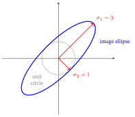

1 Linear Algebra for Machine Learning
The later chapters speak linear algebra without stopping to define it. From Graphs to LightGCN (the later chapter on LightGCN, a graph-based recommender) multiplies an adjacency matrix (a table with a \(1\) wherever a user and a movie are linked — the user watched the movie — and a \(0\) elsewhere) by an embedding matrix (a table holding one vector per user or movie, §1–§2) and calls the result propagation (each user’s and movie’s vector is replaced by a mix of its neighbors’ vectors); it scores a user against a movie with a dot product (multiply two lists of numbers entry by entry and add). The Spectral / Graph-Filter View builds its whole story on the eigenvectors of a matrix (the directions it only stretches) and on the SVD (singular value decomposition, a way to split any matrix into simple pieces).
This chapter builds all of that from zero — what a vector and a matrix are, what it means to multiply them, why the dot product measures agreement, and what eigenvectors and the SVD reveal about a matrix — so those later moves read like plain English.
What this chapter assumes: school algebra, each piece tied to where it is first used. Arithmetic with fractions and negative numbers (every section); square roots and the Pythagorean theorem (§1, for the length of an arrow); the idea of an \((x,y)\) coordinate (§1, arrows in the plane); and the cosine of an angle (recalled in §4). It needs nothing from the rest of the book (it is a sibling of the Calculus and Probability primers, not built on either). Linear Algebra and Probability can be read in either order; Calculus sections 4 to 8 lean on Linear Algebra sections 1 to 6, so read Linear Algebra before them.
1. Vectors
A recommender has to hold Ann’s taste in films, and Bob’s, and Cara’s, in a form a computer can use. A taste has to reach it as a handful of numbers in a fixed order, and two such handfuls must be easy to add, stretch and measure. This section shows each of the three, on small examples.
A vector is an ordered list of numbers. We write it as a column: \[ \mathbf{u} = \begin{bmatrix} 3 \\ 4 \end{bmatrix}, \qquad \mathbf{x} = \begin{bmatrix} 1 \\ 2 \\ 1 \end{bmatrix}. \]
Read \(\mathbf{u}=[3,4]\) as Ann’s taste in this chapter’s own toy numbers (the later chapters give the cast a different set), with 3 for her liking of action films and 4 for her liking of drama, and \(\mathbf{v}=[4,3]\) (used below) as Bob’s, with the two numbers the other way round. The vector \(\mathbf{x}\) is a taste with three numbers, which Cara’s will be in §3.
Notation. We print vectors in bold lower-case (\(\mathbf{u}\), \(\mathbf{x}\)), ordinary numbers in plain italic (\(a\), \(c\), \(d\)), and matrices (§2) as capital letters (\(A\), \(S\)). To save space we often write a column vector on one line, as \(\mathbf{u}=[3,4]\); that always means the column displayed above. Some letters do two jobs, and each section says which: in §1–§4 \(\mathbf{u}=[3,4]\) and \(\mathbf{v}=[4,3]\) are just two example vectors, and later sections reuse the letters. Two reuses matter from §1 on. First, \(\mathbf{p}\) (bold) is a user vector in §1 and §4, but \(p\) (plain) is the exponent of the \(L_p\) norm in §1. Second, \(\mathbf{q}\) (bold) is an item vector, but \(q\) (plain) is a count in §6. Each later section flags its own reuse where it starts. Each use is clear from the line it sits in.
The numbers are its components (or entries, or coordinates); how many there are is the vector’s dimension (\(\mathbf{u}\) is 2-dimensional, \(\mathbf{x}\) is 3-dimensional). Component \(i\) of \(\mathbf{u}\) is written \(u_i\) — plain italic, because it is a number — so \(\mathbf{u}=[3,4]\) has \(u_1=3\) and \(u_2=4\). The set of all \(d\)-dimensional real vectors is written \(\mathbb{R}^{d}\).
Why “vector”. From Latin vehere, “to carry” (same root as vehicle). A vector carries you from the origin to a point — it is naturally pictured as an arrow from \((0,0)\) to the point whose coordinates are its entries. That arrow picture is one reason linear algebra is geometric, not just bookkeeping.
Two readings, one object. A vector is both a list of numbers (a data record: a movie’s \(d\) learned features; a user’s \(d\) tastes) and an arrow in \(d\)-dimensional space. In machine learning (ML) these features are called an embedding — a vector whose numbers are not typed in by hand but learned: adjusted automatically, step by step, until the model’s predictions fit the data (how that adjusting works is the subject of the Calculus primer). An embedding places each user or item as a point in space — exactly what LightGCN, a graph-based recommender model, learns in the later chapter From Graphs to LightGCN.
For example, a user with embedding \(\mathbf{p}=[2,1,3]\) (three learned numbers, say a taste for action, comedy and drama) and a film with embedding \(\mathbf{q}=[1,0,2]\) get the score \(2\cdot1+1\cdot0+3\cdot2=8\), the dot product of §4; a film \([0,4,0]\) would score \(4\), so the first film ranks higher for this user. (Each number is a learned feature; the names “action”, “comedy” and “drama” are only a reading aid.)
Adding and scaling. Two vectors of the same dimension are added entry by entry: \([3,4]+[1,-2]=[4,2]\). As arrows: start the second arrow where the first one ends; the sum is the arrow from the origin to where you finish (tip-to-tail). A vector is multiplied by a number entry by entry too: \(2\cdot[1,2]=[2,4]\) is the same direction, twice as long, and a negative number also flips it, \(-1\cdot[1,2]=[-1,-2]\) (dividing by a number \(c\) means multiplying by \(1/c\)). Subtracting is adding \(-1\) times: \([3,4]-[4,3]=[-1,1]\). A weighted sum scales several vectors and adds the results: \(1\cdot[2,1]+2\cdot[0,3]=[2,1]+[0,6]=[2,7]\). These two moves, adding and scaling, are exactly what the word linear in “linear algebra” is about (§2).
Length (norm). The length of a vector — its norm, written \(\lVert\mathbf{u}\rVert\) — is how long the arrow is, by the Pythagorean theorem: \[ \lVert \mathbf{u}\rVert \;=\; \sqrt{\,u_1^2 + u_2^2 + \cdots + u_d^2\,} \;=\;\underbrace{\sqrt{\textstyle\sum_i u_i^2}}_{\text{root of the sum of squared entries}} . \]
For \(\mathbf{u}=[3,4]\): \(\lVert\mathbf{u}\rVert=\sqrt{3^2+4^2}=\sqrt{25}=5\). (Per component: squaring makes every entry non-negative and weights big ones more; the \(\sum_i\) — a capital Greek sigma, the Greek “S”, for sum — adds the term after it up for every \(i=1,2,\dots,d\), pooling the squares into one number; the outer \(\sqrt{\cdot}\) undoes the squaring so the length is back in the vector’s own units — here exactly the hypotenuse \(5\).) A vector of length \(1\) is called a unit vector; dividing a vector by its own length (“normalizing”) makes it a unit vector pointing the same way. For \([3,4]\) that is \([3,4]/5=[0.6,0.8]\), whose own length is \(\sqrt{0.36+0.64}=1\). (The zero vector, all components \(0\), has no direction, so it cannot be normalized.)
This is the L2 (Euclidean) norm, the everyday “length.” It is one of a family: the \(L_p\) norm \(\lVert\mathbf{u}\rVert_p=\big(\sum_i |u_i|^p\big)^{1/p}\) raises each absolute entry to the power \(p\), sums, then takes the \(p\)-th root. Two cases recur in ML — \(p=2\) is this Euclidean length, and \(p=1\) is the L1 (Manhattan / taxicab) norm \(\lVert\mathbf{u}\rVert_1=\sum_i|u_i|\) (for \([3,4]\) that is \(3+4=7\), the city-block distance). Loss Functions & Regularizers uses both: adding the squared L2 length of a model’s weights (the adjustable numbers it learns) to its error keeps every weight small — this is called ridge or weight decay; adding their L1 length instead pushes many weights to exactly zero — called lasso (Loss Functions & Regularizers §5.1 shows why, with numbers) — and a vector that is mostly zeros is called sparse.
Why “norm”. From Latin norma — a carpenter’s square, hence a standard or rule. A norm is the agreed standard for “how big” a vector is, and to normalize is to rescale it to the standard unit length \(1\). (Same root as normal = “conforming to the standard”; in geometry a normal direction is the perpendicular one that such a square marks off. The notation \(\lVert\cdot\rVert\) uses double bars to distinguish a vector’s norm from a number’s absolute value \(|\cdot|\).)
Intuition. Keep both pictures in your head. The list tells you how to compute; the arrow tells you what the computation means (longer = bigger, same direction = similar). Every operation below is just arithmetic on the lists that does something to the arrows.

In one line: a vector is a list of numbers that is also an arrow, and its length and its sums and scalings are plain arithmetic on the list: Ann’s \([3,4]\) has length \(5\), and adding Bob’s \([4,3]\) gives \([7,7]\).
2. Matrices
Ann, Bob and Cara have each rated several films, so the recommender holds a whole table of ratings rather than one list. How do you point at a single rating in it, and what can a table do to a list of numbers? This section names the table, shows how to address one entry, and then lets the table act.
A matrix is a rectangular grid of numbers, with rows (running left–right) and columns (running top–bottom). A matrix with \(m\) rows and \(n\) columns is called an \(m\times n\) (“\(m\)-by-\(n\)”) matrix; \(m\times n\) is its shape. The entry in row \(i\), column \(j\) is written \(A_{ij}\).
\[ A = \begin{bmatrix} 2 & 0 & 1 \\ 1 & 3 & 0 \end{bmatrix} \quad(\text{shape } 2\times 3:\ \ A_{11}=2,\ A_{23}=0). \]
Why “matrix”. Latin for womb / source (from mater, “mother”). The word was taken for an array out of which sub-determinants are born (a determinant, built later in this section, is a single number computed from a square grid; the sub-determinants come from the smaller square grids inside the array) — the grid is the “mother” the smaller objects come from.
Three ways to read one matrix — all describe the same grid, and each is useful later:
| Reading | What you see | Used in |
|---|---|---|
| A table of numbers | a spreadsheet: e.g. row \(i\) = user, column \(j\) = movie, entry = rating | the interaction matrix (From Graphs to LightGCN) |
| A stack of row vectors / columns | each row is a vector; each column is a vector | embedding matrix = a stack of per-item vectors (From Graphs to LightGCN) |
| A function | a rule that transforms a vector into another vector | propagation and filtering — mixing or smoothing vectors along the links between users and movies, §3 (From Graphs to LightGCN and The Spectral / Graph-Filter View) |
The third reading is the deep one: a matrix is a linear transformation — a rule that turns an input vector into an output vector. Here is how the rule works (§3 builds it out in full): to get entry \(i\) of the output, take row \(i\) of the matrix, multiply its entries by the matching entries of the input, and add the products. For a \(2\times2\) matrix and an input \([x,y]\), and for one example: \[ \begin{bmatrix}a&b\\c&d\end{bmatrix}\begin{bmatrix}x\\y\end{bmatrix}=\begin{bmatrix}ax+by\\cx+dy\end{bmatrix}, \qquad \begin{bmatrix}2&1\\1&2\end{bmatrix}\begin{bmatrix}1\\1\end{bmatrix}=\begin{bmatrix}2\cdot1+1\cdot1\\1\cdot1+2\cdot1\end{bmatrix}=\begin{bmatrix}3\\3\end{bmatrix}. \]
Writing a matrix just before a vector, as in \(A\mathbf{x}\), means “\(A\) applied to \(\mathbf{x}\)”. §3 calls this operation the matrix–vector product, and §4 calls “multiply matching entries and add” the dot product.
Why “linear”. A transformation is linear when it respects §1’s two moves, adding and scaling: for any vectors \(\mathbf{x},\mathbf{y}\) and any number \(c\),
\[ A(\mathbf{x}+\mathbf{y})=A\mathbf{x}+A\mathbf{y} \qquad\text{and}\qquad A(c\,\mathbf{x})=c\,A\mathbf{x}. \]
Every matrix passes both tests, because each output entry is a weighted sum of the input’s entries. Check the first test with the matrix above: it sends \([1,0]\) to \([2\cdot1+1\cdot0,\ 1\cdot1+2\cdot0]=[2,1]\) and \([0,1]\) to \([1,2]\), and \([2,1]+[1,2]=[3,3]\) — exactly its output for \([1,0]+[0,1]=[1,1]\) ✓. The second test: \(2\cdot[1,0]=[2,0]\) goes to \([4,2]=2\cdot[2,1]\) ✓. Geometrically, a linear map keeps the origin where it is and never bends a straight line into a curve. (The name: Latin linea, “line” — in one dimension a linear rule is \(y=ax\), whose graph is a straight line through the origin.)
Two special matrices. The identity matrix \(I\) (Latin idem, “the same” — it hands every vector back unchanged, \(I\mathbf{x}=\mathbf{x}\), the matrix analog of the number \(1\)) has \(1\)s on the diagonal (Greek dia- “across” + gōnia “corner”: the corner-to-corner line) and \(0\)s elsewhere; for example \(I[3,4]=[1\cdot3+0\cdot4,\ 0\cdot3+1\cdot4]=[3,4]\). A matrix is symmetric if it equals its own mirror across the diagonal (\(A_{ij}=A_{ji}\); for example \(\left[\begin{smallmatrix}2&1\\1&2\end{smallmatrix}\right]\)); the transpose \(A^{\top}\) (Latin trans- “across” + ponere “to place” — each entry placed across the diagonal) is that mirror (swap rows and columns). For example,
\[ \begin{bmatrix}2&0&1\\1&3&0\end{bmatrix}^{\top}=\begin{bmatrix}2&1\\0&3\\1&0\end{bmatrix}: \]
row 1 becomes column 1 and row 2 becomes column 2, so the \(2\times3\) matrix \(A\) above becomes a \(3\times2\) one. (A non-square matrix has no corner-to-corner diagonal; for it, “mirror” means exactly this swap — the entry in row \(i\), column \(j\) moves to row \(j\), column \(i\).) A column vector’s transpose is a row, which we write with spaces instead of commas: \([3,4]^{\top}=[3\ \ 4]\). So symmetric means \(A=A^{\top}\), which only a square matrix can satisfy: the \(\left[\begin{smallmatrix}2&1\\1&2\end{smallmatrix}\right]\) used above is its own mirror, since its two off-diagonal entries are both \(1\). Symmetry matters in §5: symmetric matrices have especially clean eigenvectors (the directions a matrix only stretches, each by its own stretch factor, its eigenvalue; §5 builds both).
The determinant — does the transform collapse space?
Read \(A\) as a transformation (third reading above). Its determinant \(\det(A)\) is the factor by which it scales area/volume, with the sign flagging a flip. For a \(2\times2\) matrix it is
\[ \det\begin{bmatrix}a&b\\c&d\end{bmatrix}=ad-bc. \]
Per component: the matrix sends the unit square’s two edges, \([1,0]\) and \([0,1]\), to its two columns, \([a,c]\) and \([b,d]\) (apply the row rule above). So the unit square, of area \(1\), lands on the parallelogram with those two edges, and that parallelogram’s area is the scaling factor. Why is the area \(ad-bc\)? Fit the parallelogram in the smallest box around it, \(a+b\) wide and \(c+d\) tall, and cut away the six corner pieces: two triangles of area \(\tfrac12 ac\), two triangles of area \(\tfrac12 bd\), and two rectangles of area \(bc\) (drawn in the figure below). What remains is
\[ (a+b)(c+d)-ac-bd-2bc \;=\; ad-bc . \]
For \(\left[\begin{smallmatrix}2&1\\1&2\end{smallmatrix}\right]\) that is \(3\cdot3-2-2-2=3\). (The box picture assumes positive entries, with column 1 below column 2 as here; the formula \(ad-bc\) holds for any entries. When \(ad-bc\) comes out negative, the transform has turned the plane over, like a mirror, and \(\lvert ad-bc\rvert\) is the area factor — which is why \(\det\) is called a signed area.) Zero area means the two columns collapsed onto one line (a killed dimension: the plane becomes a line).
![The determinant as an area factor. Left: the unit square (area 1), with edges [1,0] and [0,1].](../figs/linalg-foundations-2.svg)
- \(\det\!\begin{bmatrix}2&1\\1&2\end{bmatrix}=2\cdot2-1\cdot1=3\) — areas are tripled (the unit square becomes the parallelogram of area \(3\) in the figure).
- \(\det\!\begin{bmatrix}1&2\\2&4\end{bmatrix}=1\cdot4-2\cdot2=0\) — zero: the transform squashes the whole plane onto a line (it kills a dimension). A zero determinant is the danger sign.
- \(\det\!\begin{bmatrix}0&1\\1&0\end{bmatrix}=0\cdot0-1\cdot1=-1\) — areas are unchanged (\(\lvert-1\rvert=1\)) but the plane is flipped: this matrix swaps the two coordinates (it sends \([3,1]\) to \([1,3]\)), a mirror across the line \(y=x\).
We will follow these two running matrices through §2, §5, and §6 (the words rank, invertible and singular are defined in the next two subsections): the healthy \(S=\left[\begin{smallmatrix}2&1\\1&2\end{smallmatrix}\right]\) (det \(3\), full rank, invertible — the eigenvalue example of §5 and the ellipse picture of §6) and the collapsed \(M=\left[\begin{smallmatrix}1&2\\2&4\end{smallmatrix}\right]\) (det \(0\), rank \(1\), singular — the worked example of §6’s singular value decomposition (SVD), a way to split any matrix into simple pieces). Tracking the same two objects beats meeting fresh numbers each section.
Why “determinant”. It determines whether the matrix can be undone (next two subsections) and whether an equation \(A\mathbf{x}=\mathbf{b}\) — find the input \(\mathbf{x}\) that \(A\) sends to a given output \(\mathbf{b}\) — has exactly one solution. (\(3\times3\) and larger use a longer cofactor-expansion formula; the meaning — volume scaling, zero = collapse — is what the book needs.)
Rank — how many independent directions?
The rank is the number of linearly independent rows (equivalently, columns) — how many genuinely different directions the matrix’s output can reach. (A set of vectors is linearly independent when no one of them can be written as a weighted sum of the others — each points in a direction the rest cannot reach together.)
- \(S=\begin{bmatrix}2&1\\1&2\end{bmatrix}\) has rank 2: neither row is a multiple of the other (two independent directions → “full rank”).
- \(M=\begin{bmatrix}1&2\\2&4\end{bmatrix}\) has rank 1: row \(2 = 2\times\) row \(1\), so both rows lie on one line (this is the matrix the SVD decomposes in §6).
- A non-square matrix shows the “rows or columns” equivalence at work. The \(2\times3\) matrix \(A=\begin{bmatrix}2&0&1\\1&3&0\end{bmatrix}\) above has two independent rows (neither is a multiple of the other). Its three columns \([2,1]\), \([0,3]\), \([1,0]\) live in the plane, so at most two of them are independent, and \([2,1]\) and \([0,3]\) are not multiples of each other, so exactly two are: rank \(2\) counted either way.
A square \(n\times n\) matrix with rank \(n\) is full rank; rank \(<n\) is rank-deficient.
Invertibility — can the transform be undone?
A square matrix \(A\) is invertible (or nonsingular) if some inverse \(A^{-1}\) undoes it: applying \(A\) and then \(A^{-1}\), or the other way round, hands every vector back unchanged, \(A^{-1}(A\mathbf{x})=\mathbf{x}\) — in the matrix-product language of §3, \(A^{-1}A=AA^{-1}=I\). For a \(2\times2\),
\[ A^{-1}=\frac{1}{\det A}\begin{bmatrix}d&-b\\-c&a\end{bmatrix}\qquad(\text{exists only when }\det A\neq0). \]
Per component: swap the diagonal (\(a\leftrightarrow d\)), negate the off-diagonal (\(b,c\)), then divide every entry by \(\det A\) — that rescaling is exactly what makes \(A^{-1}\) hand every vector back unchanged, and it divides by zero (no inverse) precisely when \(\det A=0\).
For \(S=\begin{bmatrix}2&1\\1&2\end{bmatrix}\) (\(\det=3\)): \(S^{-1}=\tfrac{1}{3}\begin{bmatrix}2&-1\\-1&2\end{bmatrix}=\begin{bmatrix}0.667&-0.333\\-0.333&0.667\end{bmatrix}\). Check that it undoes \(S\): \(S\) sends \([1,0]\) to \([2,1]\), and \(S^{-1}[2,1]=\tfrac13\,[\,2\cdot2+(-1)\cdot1,\ (-1)\cdot2+2\cdot1\,]=\tfrac13[3,0]=[1,0]\) ✓ — back where we started (§3 multiplies \(S\) and \(S^{-1}\) out in full). But \(M\) has \(\det=0\), so no inverse exists — once the plane is flattened onto a line you cannot recover which point you came from.
The one fact that ties §2 together. For a square matrix these are the same condition (a fact taken on trust here, as in Strang, 2023, chapters 5 and 6; this chapter checks it on \(S\) and \(M\) only): \[\begin{gathered} \det A\neq 0 \;\Longleftrightarrow\; \text{full rank} \;\Longleftrightarrow\; \text{invertible}\\[4pt] \Longleftrightarrow\; \text{no eigenvalue (§5) or singular value (§6) is }0. \end{gathered}\] Read the last line as “no direction is squashed to nothing”: an eigenvalue (§5) or singular value (§6) is a stretch factor of the matrix, and the matrix \(M\) below has eigenvalues \(0\) and \(5\) (§5 finds them), so it fails the test. A matrix that fails them is singular (the word §6 traces). Why “invertible”: the transform can be inverted — run backwards.
Watch the collapse (a rank-1 matrix, by hand). Take \(M=\begin{bmatrix}1&2\\2&4\end{bmatrix}\) (rank \(1\), \(\det=0\)) and read where it sends the two unit axes, with the row rule from the start of this section: \(M[1,0]=[1\cdot1+2\cdot0,\ 2\cdot1+4\cdot0]=[1,2]\) and \(M[0,1]=[2,4]=2[1,2]\). Both land on the single line through \([1,2]\) — and so does every output, because both columns are multiples of \([1,2]\) (e.g. \(M[1,1]=[1+2,\ 2+4]=[3,6]=3[1,2]\)). The whole plane is squashed onto one line, the column space of \(M\), also called its image: the set of every output \(M\) can produce — here all the multiples \(c\,[1,2]\), one for every number \(c\), written \(\{c\,[1,2]\}\) (curly braces mean “the set of all”). (Why “column space”: \(M[x,y]=[x+2y,\ 2x+4y]=x[1,2]+y[2,4]\), so every output is a weighted sum of \(M\)’s columns.)
Two consequences fall out, and both are the meaning of “\(\det=0\)”:
- A direction is destroyed. \(M[2,-1]=[1\cdot2+2\cdot(-1),\ 2\cdot2+4\cdot(-1)]=[0,0]\): the input \([2,-1]\) is mapped to the origin, the zero vector \(\mathbf{0}=[0,0]\) (bold, because it is a vector). So is every multiple \(c\,[2,-1]\); that killed line of inputs is the null space (Latin nullus, “none”: the inputs sent to zero) — the dimension the transform throws away.
- It cannot be undone. \(M[3,-1]=[3-2,\ 6-4]=[1,2]=M[1,0]\): two different inputs give the same output, so there is no inverse — once flattened onto the line, \([1,0]\) and \([3,-1]\) are indistinguishable.
A full-rank map keeps the plane a plane; a rank-deficient one loses a dimension. That lost dimension is exactly the zero singular value the SVD exposes in §6. It is also the same kind of collapse that over-smoothing causes in graph recommenders. (A graph is a set of dots, called nodes — for example users and movies — joined by lines to their neighbors, such as a user to the movies they watched.) A graph model that mixes each node’s vector with its neighbors’ vectors too many times ends with every vector pointing almost the same way, so the nodes can no longer be told apart (From Graphs to LightGCN §12).

In one line: a matrix is a rule that turns vectors into vectors, and its determinant, rank and invertibility all tell whether that rule loses a dimension. Read \(A\) as two users’ ratings of three films: \(A_{21}=1\) is the second user’s rating of the first film (§3 reads the same grid a second way, rows as films).
3. The matrix–vector product
Cara’s taste is a short list of numbers, and the recommender wants one score for every film in the catalog. Is there a single move that turns her taste into all the film scores at once, instead of one film at a time? This section builds that move, the product of a matrix and a vector, and shows it on a small case.
This is the operation: many of the book’ central steps are “multiply by a matrix”, as the end of the worked example below shows.
The rule. To multiply matrix \(A\) (shape \(m\times n\)) by vector \(\mathbf{x}\) (dimension \(n\)), do what §2 did: take each row of \(A\), multiply its entries by the matching entries of \(\mathbf{x}\), and add the products — the operation §4 studies as the dot product. The result is a new vector of dimension \(m\) — one entry per row: \[ (A\mathbf{x})_i \;=\; \underbrace{\sum_{j=1}^{n} A_{ij}\,x_j}_{\text{row }i\text{ times }\mathbf{x}\text{, entry by entry, summed}} . \]
Here \((A\mathbf{x})_i\) is entry \(i\) of the output, and \(\sum_{j=1}^{n}\) adds the term after it for \(j=1,2,\dots,n\) — one term per entry of row \(i\) (the numbers under and over the \(\sum\) give the first and last \(j\)). For row 1 of the example below, \([2,0,1]\) with \([1,2,1]\) gives \(2\cdot1+0\cdot2+1\cdot1=3\).
The inner dimensions must match. Write the two shapes side by side — a vector with \(n\) entries is an \(n\times1\) matrix, a single column: \((m\times\underline{n})\,(\underline{n}\times1)\). The two inner numbers must agree, and the outer two give the answer’s shape, \(m\times1\): an \(m\times n\) matrix eats an \(n\)-vector and emits an \(m\)-vector (“\(n\) in, \(m\) out”). If they don’t match, the product is undefined.
Worked by hand. With \(A=\begin{bmatrix}2&0&1\\[2pt]1&3&0\end{bmatrix}\) and \(\mathbf{x}=\begin{bmatrix}1\\2\\1\end{bmatrix}\): \[ A\mathbf{x}= \begin{bmatrix} 2\cdot 1 + 0\cdot 2 + 1\cdot 1\\[2pt] 1\cdot 1 + 3\cdot 2 + 0\cdot 1 \end{bmatrix} = \begin{bmatrix} 2+0+1\\ 1+6+0 \end{bmatrix} = \begin{bmatrix} 3\\ 7 \end{bmatrix}. \quad✓ \]
- Row 1 \([2,0,1]\) dotted with \([1,2,1]\): \(2+0+1=3\). ✓
- Row 2 \([1,3,0]\) dotted with \([1,2,1]\): \(1+6+0=7\). ✓
A \(2\times 3\) matrix turned a 3-vector into a 2-vector — exactly “3 in, 2 out.”
This is a second reading of the same grid \(A\): where §2 closed with rows as users, read the rows as films. The two rows of \(A\) are two films, each described by three numbers, and \(\mathbf{x}\) as Cara’s taste in the same three features. Then the entries of \(A\mathbf{x}\) are the two film scores: 3 for the first film and 7 for the second, found in one move.
The series gives that move several names: a propagation layer (which replaces each node’s vector with a mix of its neighbors’ vectors, using §2’s graph words), a graph filter (a matrix that smooths or sharpens values across a graph’s links) and a linear scoring head (the final step of a model, which turns vectors into a score) are each “multiply by a matrix.”
Intuition. Two complementary pictures of the same product: (a) per-output: each output entry asks one row “how much do you agree with \(\mathbf{x}\)?” (a dot product — §4 shows why it measures agreement). (b) per-input: \(A\mathbf{x}\) is a weighted blend of \(A\)’s columns, the weights being \(\mathbf{x}\)’s entries — \(A\mathbf{x}=1\!\cdot\!\text{col}_1+2\!\cdot\!\text{col}_2+1\!\cdot\!\text{col}_3 =1\cdot[2,1]+2\cdot[0,3]+1\cdot[1,0]=[2+0+1,\ 1+6+0]=[3,7]\), the same answer. That second picture — “a matrix mixes its columns” — is the same arithmetic a graph-propagation layer uses to mix each node’s value with its neighbors’.
A 3-node case. Three users in a row, 1 linked to 2 and 2 linked to 3, give the adjacency matrix \(A=\left[\begin{smallmatrix}0&1&0\\1&0&1\\0&1&0\end{smallmatrix}\right]\) (a new \(A\), not the \(2\times3\) matrix; users link to users here, a small stand-in for LightGCN’s user–movie links); give each user one number, \(\mathbf{x}=[1,2,4]\). Row reading: user 2’s new value is the sum over its neighbors, \(1+4=5\), and users 1 and 3 each get \(2\). Column reading: \(1\cdot[0,1,0]+2\cdot[1,0,1]+4\cdot[0,1,0]=[2,5,2]\), the same answer. With a vector per user (an embedding matrix whose rows are those vectors), the same product mixes whole rows: with \(E=\left[\begin{smallmatrix}1&0\\2&1\\4&2\end{smallmatrix}\right]\) (its first column is \(\mathbf{x}\)), user 2’s new row is the sum of its neighbors’ rows, \([1,0]+[4,2]=[5,2]\).

Matrix times matrix is the same rule applied column by column: \(AB\)’s \(j\)-th column is \(A\) times \(B\)’s \(j\)-th column. Equivalently, entry \((i,j)\) of \(AB\) is row \(i\) of \(A\) times column \(j\) of \(B\), entry by entry, summed. The shapes follow the same bookkeeping: \((m\times n)(n\times p)\) gives an \(m\times p\) matrix (here \(p\) is a column count, not the exponent of §1) — the inner numbers must agree. For instance the \(2\times3\) matrix \(A\) above times its \(3\times2\) transpose (§2) is \(2\times2\), \(AA^{\top}=\left[\begin{smallmatrix}5&2\\2&10\end{smallmatrix}\right]\); its entry \((1,1)\) is row 1 of \(A\) times column 1 of \(A^{\top}\), \(2\cdot2+0\cdot0+1\cdot1=5\).
Worked once, with \(C=\begin{bmatrix}1&2\\3&4\end{bmatrix}\) and the column-swap \(B=\begin{bmatrix}0&1\\1&0\end{bmatrix}\): column 1 of \(CB\) is \(C[0,1]=[1\cdot0+2\cdot1,\ 3\cdot0+4\cdot1]=[2,4]\) and column 2 is \(C[1,0]=[1\cdot1+2\cdot0,\ 3\cdot1+4\cdot0]=[1,3]\); for \(BC\) the columns are \(B[1,3]=[3,1]\) and \(B[2,4]=[4,2]\). So
\[ CB=\begin{bmatrix}1&2\\3&4\end{bmatrix}\!\begin{bmatrix}0&1\\1&0\end{bmatrix}=\begin{bmatrix}2&1\\4&3\end{bmatrix}, \qquad BC=\begin{bmatrix}0&1\\1&0\end{bmatrix}\!\begin{bmatrix}1&2\\3&4\end{bmatrix}=\begin{bmatrix}3&4\\1&2\end{bmatrix}. \]
\(CB\) swapped \(C\)’s columns, \(BC\) swapped its rows — so order matters: \(CB\ne BC\) in general. Grouping, on the other hand, does not: for three matrices whose shapes fit, \((PQ)R=P(QR)\) — you may multiply either pair first — so a product of three matrices needs no brackets (§6 uses one). Check it with the \(C\) and \(B\) just used: \((CB)B=\left[\begin{smallmatrix}2&1\\4&3\end{smallmatrix}\right]B=\left[\begin{smallmatrix}1&2\\3&4\end{smallmatrix}\right]=C\), and \(C(BB)=CI=C\) too, because swapping twice changes nothing.
What a product means: \(CB\) is “apply \(B\), then \(C\)”, because \((CB)\mathbf{x}=C(B\mathbf{x})\) — the matrix nearest the vector acts first. With \(\mathbf{x}=[1,0]\): \(B\mathbf{x}=[0,1]\) (the swap), then \(C[0,1]=[2,4]\), which is exactly column 1 of \(CB\) found above. Read right to left, like putting on socks before shoes; swapping the order swaps the story, which is why \(BC\ne CB\).
And here is the check promised in §2, entry by entry: \[ SS^{-1}=\frac13\begin{bmatrix}2\cdot2+1\cdot(-1)&2\cdot(-1)+1\cdot2\\1\cdot2+2\cdot(-1)&1\cdot(-1)+2\cdot2\end{bmatrix} =\frac13\begin{bmatrix}3&0\\0&3\end{bmatrix}=I . \]
(You use this exact rule again in §6, to form \(M^{\top}M\).)
In one line: multiplying by a matrix means “dot each row with the vector”, and multiplying two matrices means “do the right one first, then the left one”.
4. The dot product and cosine similarity
Ann’s taste is \([3,4]\) and Bob’s is \([4,3]\): the same two numbers in the other order. If Bob doubled every rating, to \([8,6]\), would their tastes differ? The recommender needs one number that says how much two lists agree. The dot product (multiply matching entries and add) grows when one list simply uses bigger numbers, while the cosine (a number from \(-1\) to \(1\) for how nearly two arrows point the same way) does not, so this section builds both and compares them on Ann and Bob.
The dot product (also inner product or scalar product) of two same-dimension vectors multiplies them entry-by-entry and sums: \[ \mathbf{u}\cdot\mathbf{v} \;=\; \sum_{i=1}^{d} u_i v_i \;=\; u_1v_1 + u_2v_2 + \cdots + u_dv_d . \]
For Ann and Bob, \([3,4]\cdot[4,3]=3\cdot4+4\cdot3=24\). It returns a single number (a scalar — Latin scala, “ladder/scale”: a pure magnitude that scales a vector, with no direction of its own), not a vector — hence “scalar product.”
A reminder: the cosine. In a right triangle, the cosine of an angle \(\theta\) (Greek theta) is the side next to \(\theta\) divided by the hypotenuse, written \(\cos\theta\). In §1’s 3-4-5 triangle, the angle between \(\mathbf{u}=[3,4]\) and the \(x\)-axis has \(\cos\theta=3/5=0.6\). As an angle opens from \(0^\circ\) through \(90^\circ\) to \(180^\circ\), its cosine slides from \(1\) through \(0\) to \(-1\). A calculator’s \(\cos^{-1}\) key runs this backwards, from a cosine to its angle: \(\cos^{-1}(0.6)\approx53.13^\circ\).
A clean geometric fact ties the dot product to angle and length: \[ \mathbf{u}\cdot\mathbf{v} \;=\; \underbrace{\lVert\mathbf{u}\rVert}_{\text{length of }\mathbf{u}}\, \underbrace{\lVert\mathbf{v}\rVert}_{\text{length of }\mathbf{v}}\, \underbrace{\cos\theta}_{\substack{\text{cosine of the}\\\text{angle between them}}} . \]
Why it holds. Draw the triangle whose sides are \(\mathbf{u}\), \(\mathbf{v}\) and the gap \(\mathbf{u}-\mathbf{v}\) between their tips. The law of cosines (Pythagoras for any triangle: \(c^2=a^2+b^2-2ab\cos\gamma\), where \(\gamma\), the Greek letter gamma, is the angle between sides \(a\) and \(b\); with \(a=3\), \(b=4\), \(\gamma=90^\circ\) it reads \(c^2=9+16-0=25\), plain Pythagoras) gives \(\lVert\mathbf{u}-\mathbf{v}\rVert^2=\lVert\mathbf{u}\rVert^2+\lVert\mathbf{v}\rVert^2-2\lVert\mathbf{u}\rVert\lVert\mathbf{v}\rVert\cos\theta\). Expanding the entries instead, each term of \((u_1-v_1)^2+(u_2-v_2)^2+\cdots\) is \((u_i-v_i)^2=u_i^2-2u_iv_i+v_i^2\), so the sum comes to \(\lVert\mathbf{u}\rVert^2+\lVert\mathbf{v}\rVert^2-2\,\mathbf{u}\cdot\mathbf{v}\). The two right-hand sides must agree, so \(\mathbf{u}\cdot\mathbf{v}=\lVert\mathbf{u}\rVert\lVert\mathbf{v}\rVert\cos\theta\). (The worked example below checks it with numbers.)
So the dot product is large and positive when two vectors point the same way, zero when they are perpendicular, negative when they oppose. Perpendicular vectors (dot product \(0\)) are called orthogonal (Greek orthos “right/straight” + gōnia “angle” — literally “right-angled,” the same orthos as in orthodontics), written with the symbol \(\perp\), read “is perpendicular to” (for example \([3,4]\cdot[-4,3]=-12+12=0\), so \([3,4]\perp[-4,3]\)); the word returns in §5 and §6.
Cosine similarity (cosine = “complement’s sine”: the sine of an angle is the side opposite it divided by the hypotenuse, and \(\cos\theta\) equals the sine of the complementary angle \(90^\circ-\theta\)). Divide out the two lengths and you are left with just \(\cos\theta\) (for nonzero vectors), which always lies between \(-1\) and \(1\) and ignores magnitude — pure direction agreement: \[ \cos\theta \;=\; \frac{\mathbf{u}\cdot\mathbf{v}}{\lVert\mathbf{u}\rVert\,\lVert\mathbf{v}\rVert}. \]
This is cosine similarity: \(+1\) = same direction, \(0\) = orthogonal, \(-1\) = opposite. It is the standard “how alike are these two embeddings?” measure. Self-Supervised & Contrastive Learning (the later chapter on training embeddings by pulling matching pairs of vectors together and pushing mismatched ones apart) measures how well a pair matches with exactly this cosine.
Worked by hand. Take \(\mathbf{u}=[3,4]\) and \(\mathbf{v}=[4,3]\).
- Dot product: \(\mathbf{u}\cdot\mathbf{v}=3\cdot4+4\cdot3=12+12=24\).
- Lengths: \(\lVert\mathbf{u}\rVert=\sqrt{9+16}=5\), \(\lVert\mathbf{v}\rVert=\sqrt{16+9}=5\).
- Cosine: \(\dfrac{24}{5\cdot5}=\dfrac{24}{25}=0.96\). ✓ (an angle of about \(16.3^{\circ}\), since \(\cos^{-1}(0.96)\approx16.26^\circ\) on a calculator — nearly the same direction, as the near-\(1\) value says).
- An independent check that the formula gives the true angle: \(\mathbf{u}\) makes \(\cos^{-1}(3/5)\approx53.13^\circ\) with the \(x\)-axis and \(\mathbf{v}\) makes \(\cos^{-1}(4/5)\approx36.87^\circ\), and \(53.13^\circ-36.87^\circ=16.26^\circ\) ✓.
The contrast that teaches it. Now take \(\mathbf{w}=[-4,3]\) against the same \(\mathbf{u}=[3,4]\):
Dot product: \(\mathbf{u}\cdot\mathbf{w}=3(-4)+4(3)=-12+12=0\).
Cosine: \(0/(5\cdot5)=0\) — orthogonal, a right angle, no agreement. ✓ And for the third case take \(\mathbf{n}=[-4,-3]\) (a vector here, not the dimension \(n\) of §2), which points almost straight back:
Dot product: \(\mathbf{u}\cdot\mathbf{n}=3(-4)+4(-3)=-12-12=-24\).
Cosine: \(-24/(5\cdot5)=-0.96\) (an angle of about \(163.7^\circ\)) — nearly opposite, close to the strongest possible disagreement, \(-1\). ✓
| pair | dot product | cosine | reading |
|---|---|---|---|
| \(\mathbf{u}=[3,4],\ \mathbf{v}=[4,3]\) | \(24\) | \(0.96\) | almost the same direction |
| \(\mathbf{u}=[3,4],\ \mathbf{w}=[-4,3]\) | \(0\) | \(0\) | perpendicular — no agreement |
| \(\mathbf{u}=[3,4],\ \mathbf{n}=[-4,-3]\) | \(-24\) | \(-0.96\) | nearly opposite |

The recommender’s scoring rule. In a matrix-factorization recommender (one that learns a vector for every user and every item; Traditional Recommender Systems) a user \(\mathbf{p}\) and an item \(\mathbf{q}\) are each a vector, and the predicted affinity is \(\mathbf{p}\cdot\mathbf{q}\) — high when their directions agree. From Graphs to LightGCN scores a user against a movie the same way. That single dot product is the entire scoring head (§3) of both recommenders. Cosine is its length-normalized cousin. With numbers: for \(\mathbf{p}=[2,1]\) and an item \(\mathbf{q}=[1,3]\) the predicted affinity is \(2\cdot1+1\cdot3=5\); a second item \(\mathbf{q}'=[3,0]\) scores \(2\cdot3+1\cdot0=6\), so this user is predicted to prefer \(\mathbf{q}'\), and the ranking of items is just the ranking of their dot products.
Cousins: Euclidean distance, and a serving trick
Two more scoring rules complete the picture. Euclidean distance \(\lVert\mathbf{u}-\mathbf{v}\rVert\) is the straight-line gap between the two arrow-tips — subtract, then take the L2 norm (§1). For \(\mathbf{u}=[3,4]\) and \(\mathbf{v}=[4,3]\): \(\mathbf{u}-\mathbf{v}=[-1,1]\), so distance \(=\sqrt{2}\approx1.41\); for the perpendicular \(\mathbf{w}=[-4,3]\): \(\mathbf{u}-\mathbf{w}=[7,1]\), distance \(=\sqrt{50}\approx7.07\). To see which of the three notices length, add \(2\mathbf{v}=[8,6]\) — the same direction as \(\mathbf{v}\), twice as long (Bob doubling every rating): \(\mathbf{u}\cdot2\mathbf{v}=3\cdot8+4\cdot6=48\), the cosine is \(48/(5\cdot10)=0.96\) again, and \(\mathbf{u}-2\mathbf{v}=[-5,-2]\) gives distance \(\sqrt{29}\approx5.39\). Scale it again, \(3\mathbf{v}=[12,9]\): \(\mathbf{u}\cdot3\mathbf{v}=72\), the cosine is \(72/(5\cdot15)=0.96\) once more, and \(\mathbf{u}-3\mathbf{v}=[-9,-5]\) gives distance \(\sqrt{106}\approx10.30\). The dot product and the distance move with every scaling; the cosine stays put.
| measure | \(\mathbf{u},\mathbf{v}\) | \(\mathbf{u},\mathbf{w}\) | \(\mathbf{u},2\mathbf{v}\) | \(\mathbf{u},3\mathbf{v}\) | feels length? |
|---|---|---|---|---|---|
| dot product | \(24\) | \(0\) | \(48\) | \(72\) | yes: doubled, tripled |
| cosine | \(0.96\) | \(0\) | \(0.96\) | \(0.96\) | no: unchanged |
| Euclidean distance | \(1.41\) | \(7.07\) | \(5.39\) | \(10.30\) | yes: from \(1.41\) to \(10.30\) |
Which to use? Cosine when only direction (a taste profile) matters and vector length is an artifact; distance when magnitude is meaningful; the raw dot product when you want both — and it is the cheapest, which is one reason recommenders score with it (a claim from practice that this chapter does not test).
A serving trick (practitioner). “Serving” means answering live requests once a model is trained. L2-normalize every embedding once (divide by its length, §1) and the dot product becomes the cosine — so cosine ranking turns into plain inner-product search, which fast vector indexes do quickly (a claim from practice, not tested here). The flip side: on un-normalized vectors the dot product is length-sensitive (the table’s \(2\mathbf{v}\) and \(3\mathbf{v}\) columns: scaling a vector scales its dot product and leaves its cosine alone), so a few big-norm “popular” items can dominate the ranking — a bias to watch for, from practice and not tested here.
Projection: a coordinate is a dot product
Projecting \(\mathbf{u}\) onto \(\mathbf{v}\) asks how much of \(\mathbf{u}\) lies along \(\mathbf{v}\)’s direction — geometrically, the shadow \(\mathbf{u}\) casts on \(\mathbf{v}\)’s line: \[ \mathrm{proj}_{\mathbf{v}}\mathbf{u} \;=\; \underbrace{\frac{\mathbf{u}\cdot\mathbf{v}}{\lVert\mathbf{v}\rVert^{2}}}_{\text{how many }\mathbf{v}\text{'s}}\;\mathbf{v}. \]
Per component: the dot product measures the overlap. Why divide by the square of \(\lVert\mathbf{v}\rVert\)? The shadow’s length is \(\lVert\mathbf{u}\rVert\cos\theta\) (the side next to \(\theta\) in the right triangle whose hypotenuse is \(\mathbf{u}\)), and by the formula above that equals \(\mathbf{u}\cdot\mathbf{v}/\lVert\mathbf{v}\rVert\). Dividing by \(\lVert\mathbf{v}\rVert\) once more counts how many copies of \(\mathbf{v}\) fit into that length; multiplying by \(\mathbf{v}\) then lays that many copies along the line. Worked: project \(\mathbf{u}=[3,4]\) onto the \(x\)-axis \(\mathbf{v}=[1,0]\): \(\frac{3}{1}[1,0]=[3,0]\) — exactly \(\mathbf{u}\)’s \(x\)-component, its shadow on the floor. Now onto a \(\mathbf{v}\) that is not of length \(1\), \(\mathbf{v}=[1,1]\) (length \(\sqrt2\)): \(\mathbf{u}\cdot\mathbf{v}=3+4=7\) and \(\lVert\mathbf{v}\rVert^2=2\), so \(\mathrm{proj}_{\mathbf{v}}\mathbf{u}=\tfrac72[1,1]=[3.5,3.5]\) — \(3.5\) copies of \([1,1]\), a shadow of length \(7/\sqrt2\approx4.95\).
What a basis is. A basis is a set of vectors from which every vector can be built in exactly one way as a weighted sum; in 2-D, any two vectors that do not lie on one line will do. For example \([1,0]\) and \([1,1]\) build \([3,4]=-1\cdot[1,0]+4\cdot[1,1]\) in that one way only, while \([1,0]\) and \([2,0]\) lie on one line and cannot build \([3,4]\) at all. Call the basis vectors \(\mathbf{e}_1,\dots,\mathbf{e}_d\).
Why it matters downstream. When the basis vectors form an orthonormal basis (unit-length and mutually perpendicular, such as \([1,0],[0,1]\) — §6’s \(U,V\) hold such sets), every \(\lVert\mathbf{e}_i\rVert^{2}=1\), so each projection is just a dot product and a vector’s coordinates are a list of them: \(\mathbf{u}=\sum_i(\mathbf{u}\cdot\mathbf{e}_i)\,\mathbf{e}_i\). That is exactly what The Spectral / Graph-Filter View does, with a special basis — the eigenvectors of §5.
Why “orthonormal”. A blend of orthogonal (perpendicular, above) + normal (unit length, §1’s normalize): an orthonormal basis is a full set of directions that are mutually perpendicular and each of length \(1\) — a clean, rotated set of axes.
A tiny orthonormal basis (worked). Rotate the standard axes by \(45^\circ\) to get \(\mathbf{e}_1=\tfrac{1}{\sqrt2}[1,1]\approx[0.707,0.707]\) and \(\mathbf{e}_2=\tfrac{1}{\sqrt2}[-1,1]\approx[-0.707,0.707]\) — arrows along the same two axes that §5 will find for the running matrix \(S\), scaled to length \(1\). Check the two defining properties: each is a unit vector, \(\lVert\mathbf{e}_1\rVert=\sqrt{0.5+0.5}=1\) (same for \(\mathbf{e}_2\)), and they are orthogonal, \(\mathbf{e}_1\cdot\mathbf{e}_2=\tfrac12(-1+1)=0\). ✓ Now read \(\mathbf{u}=[3,4]\) in this frame — each coordinate is one dot product: \[ c_1=\mathbf{u}\cdot\mathbf{e}_1=\tfrac{3+4}{\sqrt2}=\tfrac{7}{\sqrt2}\approx4.95,\qquad c_2=\mathbf{u}\cdot\mathbf{e}_2=\tfrac{-3+4}{\sqrt2}=\tfrac{1}{\sqrt2}\approx0.707, \]
and rebuilding from those coordinates returns \(\mathbf{u}\) exactly: \(c_1\mathbf{e}_1+c_2\mathbf{e}_2=\tfrac{7}{\sqrt2}\!\cdot\!\tfrac{1}{\sqrt2}[1,1]+\tfrac{1}{\sqrt2}\!\cdot\!\tfrac{1}{\sqrt2}[-1,1]=\tfrac72[1,1]+\tfrac12[-1,1]=[3,4]\). ✓ The first piece, \(c_1\mathbf{e}_1=\tfrac72[1,1]=[3.5,3.5]\), is the very shadow of \(\mathbf{u}\) on \([1,1]\) found above, because \(\mathbf{e}_1\) points along \([1,1]\). That round-trip — project onto each basis vector, then add the pieces back — is the whole mechanism behind §6’s \(U,V\) and behind The Spectral / Graph-Filter View.

In one line: the dot product measures how much two vectors agree, and with perpendicular unit-length axes every coordinate is just one dot product. For Ann and Bob, doubling Bob’s ratings takes their dot product from \(24\) to \(48\) and leaves their cosine at \(0.96\): their tastes are no more different than before.
5. Eigenvalues and eigenvectors
Ann’s taste list goes through a matrix, which sends every list of numbers to a new list, and usually comes out pointing somewhere new. Is there any list that comes out pointing the same way, only longer or shorter? Finding such lists shows what the matrix does along those directions, and this section finds them.
Read a matrix \(A\) as a function (§2): it sends each vector \(\mathbf{v}\) to a new vector \(A\mathbf{v}\). Usually that rotates and stretches the arrow.
But a few special directions are only stretched, never rotated — \(A\mathbf{v}\) lands on the same line as \(\mathbf{v}\): \[ A\,\mathbf{v} \;=\; \underbrace{\lambda}_{\substack{\text{eigenvalue:}\\\text{stretch factor}}}\;\underbrace{\mathbf{v}}_{\substack{\text{eigenvector:}\\\text{the unmoved direction}}} . \]
Such a \(\mathbf{v}\) (nonzero; a new job for the letter, not the §1 example \([4,3]\)) is an eigenvector of \(A\); the number \(\lambda\) telling how much it is stretched is the matching eigenvalue. \(\lambda>1\) stretches, \(0<\lambda<1\) shrinks, \(\lambda<0\) flips (and scales by \(|\lambda|\)), \(\lambda=1\) leaves it fixed — and \(\lambda=0\) crushes it to the zero vector \(\mathbf{0}\), so the eigenvector lies in the null space of §2. The running \(M=\left[\begin{smallmatrix}1&2\\2&4\end{smallmatrix}\right]\) has exactly this case: \(M[2,-1]=[0,0]=0\cdot[2,-1]\), so \([2,-1]\) — the very direction §2 watched being destroyed — is an eigenvector of \(M\) with eigenvalue \(0\); and \(M[1,2]=[1+4,\ 2+8]=[5,10]=5\cdot[1,2]\) gives its other eigenvalue, \(5\). Two more cases with numbers: \(\left[\begin{smallmatrix}0.5&0\\0&-1\end{smallmatrix}\right]\) sends \([1,0]\) to \([0.5,0]\) (here \(\lambda=0.5\): shrunk) and \([0,1]\) to \([0,-1]\) (\(\lambda=-1\): flipped).
Why “eigen”. German eigen = “own / characteristic / proper.” An eigenvector is a direction the matrix treats as its own — it points the result straight back out along the input. (Older English texts even say characteristic vector.) The name is the mnemonic: eigen = the matrix’s own axes.
Why they matter. For a real symmetric matrix (§2), eigenvectors with different eigenvalues are automatically orthogonal (§4). The reason takes two lines. Suppose \(A\mathbf{v}=\lambda\mathbf{v}\) and \(A\mathbf{w}=\mu\mathbf{w}\) with \(\lambda\neq\mu\) (here \(\mathbf{v}\) and \(\mathbf{w}\) are general eigenvectors, not the example vectors of §1–§4). Then
\[ \lambda\,(\mathbf{v}\cdot\mathbf{w}) \;\overset{A\mathbf{v}=\lambda\mathbf{v}}{=}\;(A\mathbf{v})\cdot\mathbf{w} \;\overset{A^{\top}=A}{=}\;\mathbf{v}\cdot(A\mathbf{w}) \;\overset{A\mathbf{w}=\mu\mathbf{w}}{=}\;\mu\,(\mathbf{v}\cdot\mathbf{w}), \]
so \((\lambda-\mu)(\mathbf{v}\cdot\mathbf{w})=0\), and since \(\lambda-\mu\neq0\) the dot product is \(0\). The middle step is what “symmetric” buys. It holds for any two vectors: \((A\mathbf{v})\cdot\mathbf{w}=\mathbf{v}^{\top}A^{\top}\mathbf{w}=\mathbf{v}^{\top}A\mathbf{w}\), by the transpose rule of §6 (used a little early here) \((A\mathbf{v})^{\top}=\mathbf{v}^{\top}A^{\top}\) (transposing a product reverses the order of its factors and transposes each) and \(A^{\top}=A\). Check it on \(S\) with the (non-eigen) vectors \([1,0]\) and \([0,1]\): \((S[1,0])\cdot[0,1]=[2,1]\cdot[0,1]=1\) and \([1,0]\cdot(S[0,1])=[1,0]\cdot[1,2]=1\) ✓.
And for a real symmetric matrix we can always choose a complete set of mutually perpendicular unit eigenvectors, one per dimension. This is the spectral theorem, stated here without proof (Strang, 2023, chapter 6). A basis made of eigenvectors is an eigenbasis (§4); for \(S\) below, \([1,1]\) and \([1,-1]\). “Choose,” because a repeated eigenvalue leaves freedom: for the identity \(I\) every nonzero vector is an eigenvector with \(\lambda=1\), so \([1,0]\) and \([1,1]\) are both eigenvectors although \([1,0]\cdot[1,1]=1\neq0\) — we pick perpendicular ones.
In the eigenbasis’s axes the matrix is trivial: it just scales each axis by its \(\lambda\). So any action of a symmetric matrix is “rotate into its eigen-axes, scale each, rotate back” — in §4’s language: read the vector’s coordinates in the eigenbasis (one dot product each), multiply each coordinate by its \(\lambda\), and add the pieces back (worked below). This is the engine under The Spectral / Graph-Filter View. There the matrix records which nodes of a graph (§2) are linked — the graph’s adjacency matrix, suitably scaled — and its eigenvectors act as the graph’s frequency patterns, from smooth (linked nodes get similar values) to jagged (linked nodes get opposite values); a filter keeps some patterns and damps others, by reweighting each eigenvector by a function of its \(\lambda\).
Worked by hand. Take the symmetric matrix \(S=\begin{bmatrix}2&1\\[2pt]1&2\end{bmatrix}\). Two directions are clean to test (using \(\tfrac{1}{\sqrt2}\approx0.707\)):
Direction \(\mathbf{v}_1=[1,1]\) (scaled to unit length \([0.707,0.707]\)): \[ S\begin{bmatrix}1\\1\end{bmatrix} =\begin{bmatrix}2\cdot1+1\cdot1\\ 1\cdot1+2\cdot1\end{bmatrix} =\begin{bmatrix}3\\3\end{bmatrix} =3\begin{bmatrix}1\\1\end{bmatrix}\;\Rightarrow\;\lambda_1=3. \quad✓ \]
Direction \(\mathbf{v}_2=[1,-1]\) (unit \([0.707,-0.707]\)): \[ S\begin{bmatrix}1\\-1\end{bmatrix} =\begin{bmatrix}2\cdot1+1(-1)\\ 1\cdot1+2(-1)\end{bmatrix} =\begin{bmatrix}1\\-1\end{bmatrix} =1\begin{bmatrix}1\\-1\end{bmatrix}\;\Rightarrow\;\lambda_2=1. \quad✓ \]
| eigenvector (unit) | eigenvalue \(\lambda\) | what \(S\) does to it |
|---|---|---|
| \([0.707,\;0.707]\) (its two coordinates are equal) | \(3\) | stretches \(\times 3\) |
| \([0.707,\;-0.707]\) (its two coordinates are opposite) | \(1\) | leaves it unchanged |
And the two eigenvectors are orthogonal: \([1,1]\cdot[1,-1]=1-1=0\) ✓ — perpendicular axes, exactly as the symmetric case promises (their eigenvalues, \(3\) and \(1\), differ). The eigenvalues also add to \(3+1=4\), the diagonal sum \(2+2\) of \(S\) (a handy hand-check called the trace), and multiply to \(3\cdot1=3=\det S\) (§2). Both checks hold for every \(2\times2\) matrix (the characteristic equation below shows why); for \(M\), \(5+0=5=1+4\) and \(5\cdot0=0=\det M\).
An eigenvector names a line, not an arrow. Any nonzero multiple of an eigenvector is again an eigenvector with the same eigenvalue, because \(A(c\,\mathbf{v})=c\,A\mathbf{v}=c\,\lambda\mathbf{v}=\lambda\,(c\,\mathbf{v})\) (§2’s second linearity test). So what an eigenvector really names is a whole line — an axis — and its sign is a free choice: \([1,-1]\) and \([-1,1]\) name the same axis. That is why §4 could build its orthonormal basis \(\mathbf{e}_1=\tfrac{1}{\sqrt2}[1,1]\), \(\mathbf{e}_2=\tfrac{1}{\sqrt2}[-1,1]\) on these two axes: both are unit eigenvectors of \(S\) (\(\mathbf{e}_2\) is the table’s second row with its sign flipped, and \(S[-1,1]=[-2+1,\ -1+2]=[-1,1]\), so \(S\mathbf{e}_2=\mathbf{e}_2\) ✓).
Rotate, scale, rotate back — worked. Take the vector \(\mathbf{a}=[1,0]\) (not the matrix entry \(a\) of §2), which is not an eigenvector (\(S\mathbf{a}=[2,1]\) is off its line; red in the figure below), and run the three steps with §4’s \(\mathbf{e}_1,\mathbf{e}_2\):
- Rotate into the eigen-axes: \(\mathbf{a}\)’s coordinates there are one dot product each (§4), \(c_1=\mathbf{a}\cdot\mathbf{e}_1=\tfrac{1}{\sqrt2}\approx0.707\) and \(c_2=\mathbf{a}\cdot\mathbf{e}_2=-\tfrac{1}{\sqrt2}\approx-0.707\).
- Scale each by its eigenvalue: \(3c_1\approx2.121\) and \(1\cdot c_2\approx-0.707\).
- Rotate back: rebuild from the scaled coordinates, \(3c_1\,\mathbf{e}_1+1\cdot c_2\,\mathbf{e}_2=\tfrac32[1,1]-\tfrac12[-1,1]=[1.5,1.5]+[0.5,-0.5]=[2,1]\),
exactly \(S\mathbf{a}\) ✓. All \(S\) did was triple the part of \(\mathbf{a}\) that lies along \(\mathbf{e}_1\) and keep the part along \(\mathbf{e}_2\); seen in the ordinary axes, that uneven stretch looks like a turn off the line.
![The matrix S (eigenvalues 3,1) acting on three vectors: eigenvector v1=[1,1] stays on its line, stretched (Sv1=3v1, blue); eigenvector v2=[1,-1] stays on its line unmoved (Sv2=1 .](../figs/linalg-foundations-7.svg)
Where this goes next. The Spectral / Graph-Filter View puts these eigenvectors to work as a graph’s frequencies and reads \(\lambda\) as a frequency label — high \(\lambda\) = smooth pattern, low/negative \(\lambda\) = jagged. (That ordering is for the scaled adjacency matrix that chapter works with; for a close relative you will also meet there, the graph Laplacian (a matrix built from the graph’s links; §6 says more), the order flips — its low values are the smooth patterns.) The eigen machinery is defined here; The Spectral / Graph-Filter View uses it. Go there for the graph-signal meaning.
How to find them — the characteristic equation. You don’t have to guess the directions.
Two small tools first. Multiplying a matrix by a number multiplies every entry, so \(\lambda I=\left[\begin{smallmatrix}\lambda&0\\0&\lambda\end{smallmatrix}\right]\); and two matrices of the same shape are subtracted entry by entry, so \(A-\lambda I\) is just \(A\) with \(\lambda\) taken off each diagonal entry. Now follow the links one at a time:
- An eigenvector obeys \(A\mathbf{v}=\lambda\mathbf{v}\), with \(\mathbf{v}\neq\mathbf{0}\).
- Since \(I\mathbf{v}=\mathbf{v}\) (§2), the right side is also \(\lambda I\mathbf{v}\), so \(A\mathbf{v}-\lambda I\mathbf{v}=\mathbf{0}\); taking out the common \(\mathbf{v}\), as with numbers, gives \((A-\lambda I)\mathbf{v}=\mathbf{0}\).
- Every matrix also sends \(\mathbf{0}\) to \(\mathbf{0}\) (each output entry is a weighted sum of zeros). So \(A-\lambda I\) sends two different inputs, \(\mathbf{v}\) and \(\mathbf{0}\), to the same output — exactly the “it cannot be undone” of §2’s collapse — so it has no inverse: it is singular.
- By §2’s one fact, a singular matrix has determinant \(0\). Hence \(\det(A-\lambda I)=0\).
That gives the recipe:
- Eigenvalues: solve the characteristic equation \(\det(A-\lambda I)=0\) for \(\lambda\).
- Eigenvectors: for each \(\lambda\), solve \((A-\lambda I)\mathbf{v}=\mathbf{0}\).
Worked on \(S=\begin{bmatrix}2&1\\1&2\end{bmatrix}\). Step 1 — the determinant (§2) of \(S-\lambda I\): \[ \det\begin{bmatrix}2-\lambda&1\\1&2-\lambda\end{bmatrix}=(2-\lambda)^2-1=\lambda^2-4\lambda+3=(\lambda-1)(\lambda-3)=0 \;\Rightarrow\;\lambda=1,\ 3, \]
exactly the two stretch factors we tested above. Step 2 — for \(\lambda=3\), \(S-3I=\begin{bmatrix}-1&1\\1&-1\end{bmatrix}\); writing the unknown as \(\mathbf{v}=[x,y]\), \((S-3I)\mathbf{v}=[-x+y,\ x-y]\), and both entries say the same thing, \(-x+y=0\), which forces \(x=y\) → \(\mathbf{v}=[1,1]\). (The singular argument, checked: \((S-3I)[1,1]=[-1+1,\ 1-1]=[0,0]\), the same output as \((S-3I)[0,0]\).) For \(\lambda=1\), \(S-I=\begin{bmatrix}1&1\\1&1\end{bmatrix}\) forces \(y=-x\) → \(\mathbf{v}=[1,-1]\) (the same two axes as the table). Because each \(A-\lambda I\) is singular (what \(\det=0\) bought us), its one independent equation pins down only a direction — the whole line \(\{c\,\mathbf{v}\}\) of multiples solves it — so any nonzero multiple will do: \([1,1]\) here, or the unit-length \([0.707,0.707]\) of the table (divide by its length, §1).
Two facts fall out of the equation. Zero as an eigenvalue: put \(\lambda=0\) in, and the equation reads \(\det(A-0\cdot I)=\det A=0\). So \(0\) is an eigenvalue exactly when \(\det A=0\) — the link §2’s one fact promised. \(S\) has \(\det S=3\neq0\), and \(0\) is not among its eigenvalues (\(3\) and \(1\)); \(M\) has \(\det M=0\), and \(0\) is one of its eigenvalues (\(5\) and \(0\)). The trace and determinant checks: for \(S\) the polynomial came out as \(\lambda^2-4\lambda+3\) — the \(4\) in the middle term is \(S\)’s trace and the final \(3\) its determinant. That is no accident: for any \(2\times2\) matrix, expanding \((A_{11}-\lambda)(A_{22}-\lambda)-A_{12}A_{21}\) gives \(\lambda^2-(A_{11}+A_{22})\lambda+(A_{11}A_{22}-A_{12}A_{21})\), that is, \(\lambda^2-(\text{trace})\,\lambda+(\det)\). If its two roots are \(\lambda_1\) and \(\lambda_2\), the same polynomial is \((\lambda-\lambda_1)(\lambda-\lambda_2)=\lambda^2-(\lambda_1+\lambda_2)\lambda+\lambda_1\lambda_2\), and matching the two forms gives \(\lambda_1+\lambda_2=\text{trace}\) and \(\lambda_1\lambda_2=\det\).
The left side, \(\det(A-\lambda I)\), is a polynomial in \(\lambda\) — the characteristic polynomial — of degree \(n\) for an \(n\times n\) matrix, so there are \(n\) eigenvalues (counting repeats). For a non-symmetric matrix some may be complex numbers, built from \(\sqrt{-1}\), which no ordinary number is: the \(90^\circ\) turn \(\left[\begin{smallmatrix}0&-1\\1&0\end{smallmatrix}\right]\) moves every direction off its line, and its characteristic equation is \(\lambda^2+1=0\). Real symmetric matrices never need them (the spectral theorem above). That polynomial route is how eigenvalues are computed; the definition is still \(A\mathbf{v}=\lambda\mathbf{v}\), and the book mostly uses that stretched-only-direction picture. (Strang, 2023, chapter 6, works many more examples.)
In one line: an eigenvector is a direction a matrix only stretches, its eigenvalue is the stretch factor, and the characteristic equation \(\det(A-\lambda I)=0\) finds them.
6. The singular value decomposition (SVD)
The ratings of Ann, Bob, Cara and many other people fill a big table of users by films. Can such a table be written as a sum of a few simple pieces, ordered by how much of the table each explains? This section builds that decomposition and shows what it keeps when the small pieces are dropped.
Eigenvectors (§5) need a square matrix, and behave cleanest when it is symmetric. Most data matrices are rectangular (users \(\times\) movies) and not symmetric. The singular value decomposition (SVD) is the universal replacement: it works for every matrix — any shape, any contents.
Bookkeeping for the letters: in this section \(A\) stands for any matrix — except in the second worked example, which borrows the letter for \(\left[\begin{smallmatrix}3&4\\0&0\end{smallmatrix}\right]\), and in the rectangular example, where \(A\) is again the \(2\times3\) matrix of §2; the running \(M\) and \(S\) of §2 are the other worked examples.
The picture first. An eigenvector is a direction that a matrix leaves on its own line. A general matrix need not have such directions: a rectangular one cannot, since it sends vectors into a different space (a \(2\times3\) matrix turns 3-vectors into 2-vectors, §3), and even a square one may have no real one (§5’s \(90^\circ\) turn moves every direction off its line). What every matrix \(A\) does have is a set of perpendicular unit input directions \(\mathbf{v}_1,\mathbf{v}_2,\dots\) (a bold letter with a subscript is a whole vector; an italic \(u_i\) would be a single number) that it sends to perpendicular unit output directions \(\mathbf{u}_1,\mathbf{u}_2,\dots\), each stretched by a number \(\sigma_i\ge0\) (\(\sigma\) is the lower-case Greek sigma; other chapters use the same letter for other things, but in this section it is always this stretch factor): \[ A\,\mathbf{v}_i \;=\; \underbrace{\sigma_i}_{\substack{\text{singular value:}\\\text{stretch factor}}}\;\underbrace{\mathbf{u}_i}_{\substack{\text{output}\\\text{direction}}} , \qquad i=1,2,\dots \]
Compare §5’s \(A\mathbf{v}=\lambda\mathbf{v}\): there the output had to lie along the input direction itself; here it may be a different direction. So the matrix does three things in a row: it turns the input so that each \(\mathbf{v}_i\) lies along coordinate axis \(i\); it stretches axis \(i\) by \(\sigma_i\) (when \(A\) is not square, this middle step also carries the vector into the output space, dropping the extra axes or padding with zeros: for an \(m\times n\) matrix \(A\) it takes \(n\) numbers in and gives \(m\) out); and it turns again, carrying axis \(i\) onto \(\mathbf{u}_i\) — §5’s “rotate, scale, rotate back,” except that the second turn need not undo the first.
(A turn here is a rotation, possibly combined with a mirror flip: it changes no lengths and no angles.) Written as a product of three matrices, read right to left like the steps, that is the SVD: \[ A \;=\; \underbrace{U}_{\substack{\text{turn: axis } i\,\to\,\mathbf{u}_i\\(\text{output directions})}}\; \underbrace{\Sigma}_{\substack{\text{stretch axis } i\text{ by }\sigma_i\\(\text{diagonal})}}\; \underbrace{V^{\top}}_{\substack{\text{turn: }\mathbf{v}_i\,\to\,\text{axis } i\\(\text{input directions})}} . \]
- \(V\) holds the input directions \(\mathbf{v}_i\) as its columns, so \(V^{\top}\) (§2) holds them as its rows; \(U\) holds the output directions \(\mathbf{u}_i\) as its columns. Both sets are orthonormal (unit length, mutually perpendicular — §4). The \(\mathbf{u}_i\) are called the left singular vectors (their matrix \(U\) stands on the left of the product) and the \(\mathbf{v}_i\) the right singular vectors.
- \(\Sigma\) is a matrix — the same Greek capital sigma as the summation sign \(\sum\) of §1, doing a different job here. It is diagonal (zeros everywhere off its diagonal), with the singular values \(\sigma_1\ge\sigma_2\ge\cdots\ge0\) on the diagonal: the strength of each pattern. A big \(\sigma\) = a direction the matrix amplifies a lot. \(\Sigma\) need not be square, so “its diagonal” here means the entries \((1,1),(2,2),\dots\) — the slanting line down from the top-left corner, which stops at an edge before reaching the opposite corner (the gray stroke in the shapes figure below).
For the running \(S\) (§2) the pieces are these: \(\sigma_1=3\) with \(\mathbf{u}_1=\mathbf{v}_1=\tfrac{1}{\sqrt2}[1,1]\), and \(\sigma_2=1\) with \(\mathbf{u}_2=\mathbf{v}_2=\tfrac{1}{\sqrt2}[1,-1]\). The ellipse picture and the three worked cases below show where such numbers come from.
Check that the product does what the picture says (three matrices need no brackets, §3). Feed it \(\mathbf{v}_1\). \(V^{\top}\mathbf{v}_1\) takes the dot product of \(\mathbf{v}_1\) with each row of \(V^{\top}\) — that is, with each \(\mathbf{v}_j\) — which is \(1\) for \(j=1\) and \(0\) for the others, because the \(\mathbf{v}\)’s are orthonormal. So \(V^{\top}\mathbf{v}_1=[1,0,\dots,0]\), the first axis. \(\Sigma\) stretches that to \([\sigma_1,0,\dots,0]\), and \(U\) times it is \(\sigma_1\) times \(U\)’s first column (§3’s column blend): \(\sigma_1\mathbf{u}_1\) ✓.

Why “singular”. A matrix with no inverse is called singular, and “singular value” is a separate use of the same word (below); the SVD’s smallest singular value says how close a square matrix is to that singular (degenerate) state (the truncated SVD below makes this exact for the running \(S\)). A \(\sigma_i=0\) is a direction the matrix collapses to nothing. (For how the SVD itself was discovered, see Stewart, 1993.)
A sum of rank-1 pieces. A column times a row — with no dot between them; a dot would mean §4’s dot product, a single number — is a whole matrix, the outer product: the entry in row \(r\), column \(c\) of \(\mathbf{u}\mathbf{v}^{\top}\) is \(u_r v_c\), the \(r\)-th entry of \(\mathbf{u}\) times the \(c\)-th entry of \(\mathbf{v}\). For example \(\left[\begin{smallmatrix}1\\2\end{smallmatrix}\right][1\ \ 2]=\left[\begin{smallmatrix}1\cdot1&1\cdot2\\2\cdot1&2\cdot2\end{smallmatrix}\right]=\left[\begin{smallmatrix}1&2\\2&4\end{smallmatrix}\right]\) — the running \(M\). Row \(r\) of an outer product is \(u_r\) times the row \(\mathbf{v}^{\top}\), so all its rows are multiples of one row: every outer product of nonzero vectors is a rank-1 matrix.
Outer products give a second way to multiply two matrices. §3 computed entry \((r,c)\) of a product \(PQ\) as row \(r\) of \(P\) times column \(c\) of \(Q\): \(P_{r1}Q_{1c}+P_{r2}Q_{2c}+\cdots\). Collect those sums the other way round: the first terms, \(P_{r1}Q_{1c}\) over all \((r,c)\), form exactly the outer product (column 1 of \(P\))(row 1 of \(Q\)); the second terms form (column 2 of \(P\))(row 2 of \(Q\)); and so on. So a product is a sum of column-times-row pieces: \(PQ=(\text{col}_1P)(\text{row}_1Q)+(\text{col}_2P)(\text{row}_2Q)+\cdots\). (Check on §3’s \(C\) and \(B\): \(\left[\begin{smallmatrix}1\\3\end{smallmatrix}\right][0\ \ 1]+\left[\begin{smallmatrix}2\\4\end{smallmatrix}\right][1\ \ 0]=\left[\begin{smallmatrix}0&1\\0&3\end{smallmatrix}\right]+\left[\begin{smallmatrix}2&0\\4&0\end{smallmatrix}\right]=\left[\begin{smallmatrix}2&1\\4&3\end{smallmatrix}\right]=CB\) ✓.) Apply it to \(U\Sigma V^{\top}\): column \(i\) of \(U\Sigma\) is \(\sigma_i\mathbf{u}_i\) (\(\Sigma\) just scales \(U\)’s columns), and row \(i\) of \(V^{\top}\) is \(\mathbf{v}_i^{\top}\), so
\[ A \;=\; \sigma_1\,\mathbf{u}_1\mathbf{v}_1^{\top}+\sigma_2\,\mathbf{u}_2\mathbf{v}_2^{\top}+\cdots , \]
a sum of rank-1 pieces, biggest first. We will use this form to rebuild matrices below.
For a users-by-films table, one reading of this sum is that each piece \(\sigma_i\mathbf{u}_i\mathbf{v}_i^{\top}\) is one taste pattern, such as “action lovers” or “drama lovers”, with \(\sigma_i\) saying how much of the table it explains. This is an interpretation, not tested here: the \(2\times3\) example can be read as a ratings table (§2) but is far too small to show taste patterns.
The picture, drawn. Apply a matrix to every vector of length \(1\) — the unit circle — and the outputs (the circle’s image, in §2’s sense of “the set of outputs”) form an ellipse (for an invertible matrix; a singular \(2\times2\) one flattens it onto a line segment, or a point for the zero matrix). Its longest and shortest radii (its semi-axes) are \(\sigma_1\mathbf{u}_1\) and \(\sigma_2\mathbf{u}_2\): the singular values are their lengths and the output directions their directions.
For the running \(S=\left[\begin{smallmatrix}2&1\\1&2\end{smallmatrix}\right]\) they are \(3\cdot\tfrac{1}{\sqrt2}[1,1]\approx[2.12,2.12]\) and \(1\cdot\tfrac{1}{\sqrt2}[1,-1]\approx[0.71,-0.71]\) (the red arrows below; these numbers are worked out in the truncation example later in this section).

How to find the pieces — and why a square root. Two row-and-column facts do the work. A row times a column is the dot product: \(\mathbf{x}^{\top}\mathbf{y}=\mathbf{x}\cdot\mathbf{y}\), and so \(\mathbf{x}^{\top}\mathbf{x}=\lVert\mathbf{x}\rVert^2\) (§1). And transposing a product reverses its order: \((PQ)^{\top}=Q^{\top}P^{\top}\). The reason: entry \((i,j)\) of \((PQ)^{\top}\) is entry \((j,i)\) of \(PQ\), row \(j\) of \(P\) times column \(i\) of \(Q\) (§3); and row \(i\) of \(Q^{\top}\) is column \(i\) of \(Q\), column \(j\) of \(P^{\top}\) is row \(j\) of \(P\), so entry \((i,j)\) of \(Q^{\top}P^{\top}\) adds up exactly the same products.
In particular \((A\mathbf{x})^{\top}=\mathbf{x}^{\top}A^{\top}\) for any vector \(\mathbf{x}\), and for a symmetric \(A\) this gives the step §5 used: \((A\mathbf{v})\cdot\mathbf{w}=\mathbf{v}^{\top}A^{\top}\mathbf{w}=\mathbf{v}\cdot(A\mathbf{w})\). (A row times a matrix follows §3’s rule too, the row meeting each column in turn. Check it with the second example’s matrix below as \(A\), \(A=\left[\begin{smallmatrix}3&4\\0&0\end{smallmatrix}\right]\), and \(\mathbf{x}=[1,1]\): \(A\mathbf{x}=[7,0]\), and \([1\ \ 1]\,A^{\top}=[1\ \ 1]\left[\begin{smallmatrix}3&0\\4&0\end{smallmatrix}\right]=[1\cdot3+1\cdot4,\ 1\cdot0+1\cdot0]=[7\ \ 0]\) ✓.)
One consequence, for any matrix \(A\) again: \(A^{\top}A\) is always square and symmetric, since its transpose is \(A^{\top}(A^{\top})^{\top}=A^{\top}A\) (mirroring twice gives the matrix back, \((A^{\top})^{\top}=A\)). Now suppose \(\mathbf{v}\) is a unit eigenvector of it, \(A^{\top}A\,\mathbf{v}=\lambda\mathbf{v}\) (§5). How much does \(A\) stretch \(\mathbf{v}\)?
\[ \lVert A\mathbf{v}\rVert^{2} =(A\mathbf{v})^{\top}(A\mathbf{v}) =\mathbf{v}^{\top}A^{\top}A\,\mathbf{v} =\mathbf{v}^{\top}(\lambda\mathbf{v}) =\lambda\,\lVert\mathbf{v}\rVert^{2} =\lambda . \]
So \(A\) stretches \(\mathbf{v}\) by exactly \(\sqrt{\lambda}\): the singular values are the square roots of the eigenvalues of \(A^{\top}A\), \(\sigma_i=\sqrt{\lambda_i}\), and its unit eigenvectors are the input directions \(\mathbf{v}_i\) (§5 guarantees a perpendicular set of them, since \(A^{\top}A\) is symmetric). Because \(\lambda=\lVert A\mathbf{v}\rVert^{2}\) is a squared length, it is never negative, so the square root always exists. The output directions then come for free: \(\mathbf{u}_i=A\mathbf{v}_i/\sigma_i\) whenever \(\sigma_i>0\). Each has length \(1\) (the display gave \(\lVert A\mathbf{v}_i\rVert=\sigma_i\)), and they are perpendicular too: for \(i\neq j\), \((A\mathbf{v}_i)\cdot(A\mathbf{v}_j)=\mathbf{v}_i^{\top}A^{\top}A\,\mathbf{v}_j=\lambda_j\,(\mathbf{v}_i\cdot\mathbf{v}_j)=0\), because the \(\mathbf{v}\)’s are perpendicular.
Worked by hand. Take the (deliberately rank-1) matrix \(M=\begin{bmatrix}1&2\\[2pt]2&4\end{bmatrix}\) — the rank-1 matrix from §2 (row 2 is exactly \(2\times\) row 1, so the rows point the same way); one direction should carry everything. Five steps:
(a) Form \(M^{\top}M\). \(M\) is symmetric, so \(M^{\top}=M\) and \(M^{\top}M=MM\); by §3’s rule (entry \((i,j)\) = row \(i\) times column \(j\)): \[ M^{\top}M=\begin{bmatrix}1&2\\2&4\end{bmatrix}\!\begin{bmatrix}1&2\\2&4\end{bmatrix} =\begin{bmatrix}1\cdot1+2\cdot2&1\cdot2+2\cdot4\\2\cdot1+4\cdot2&2\cdot2+4\cdot4\end{bmatrix} =\begin{bmatrix}5&10\\10&20\end{bmatrix}. \]
(b) Its eigenvalues (§5): \(\det\left[\begin{smallmatrix}5-\lambda&10\\10&20-\lambda\end{smallmatrix}\right]=(5-\lambda)(20-\lambda)-100=\lambda^2-25\lambda=\lambda(\lambda-25)=0\), so \(\lambda=25\) and \(0\). (§5’s checks: they add to \(25=5+20\), the trace, and multiply to \(0=5\cdot20-10\cdot10\), the determinant ✓.)
(c) The singular values: \(\sigma_1=\sqrt{25}=5\) and \(\sigma_2=\sqrt{0}=0\). So the SVD has one nonzero piece.
(d) The input direction \(\mathbf{v}_1\): solve \((M^{\top}M-25I)\mathbf{v}=\mathbf{0}\) with \(\mathbf{v}=[x,y]\). Here \(M^{\top}M-25I=\left[\begin{smallmatrix}-20&10\\10&-5\end{smallmatrix}\right]\), whose first row says \(-20x+10y=0\), so \(y=2x\): the direction \([1,2]\). Its length is \(\sqrt{1+4}=\sqrt5\), so the unit vector is \(\mathbf{v}_1=\tfrac{1}{\sqrt5}[1,2]\approx[0.447,\,0.894]\). Check the stretch: \(M\mathbf{v}_1=\tfrac{1}{\sqrt5}[1+4,\ 2+8]=\tfrac{1}{\sqrt5}[5,10]\), of length \(\sqrt{(25+100)/5}=\sqrt{25}=5=\sigma_1\) ✓.
(e) The output direction \(\mathbf{u}_1\): \(\mathbf{u}_1=M\mathbf{v}_1/\sigma_1=\tfrac{1}{\sqrt5}[5,10]/5=\tfrac{1}{\sqrt5}[1,2]\).
Here \(\mathbf{u}_1=\mathbf{v}_1\) — for this \(M\) the output direction is the input direction (the optional box below says when that happens). The second pair carries nothing: the other eigenvector of \(M^{\top}M\), \(\mathbf{v}_2=\tfrac{1}{\sqrt5}[2,-1]\) (perpendicular to \(\mathbf{v}_1\)), is §2’s destroyed direction, \(M\mathbf{v}_2=\mathbf{0}\), so \(\sigma_2=0\), and \(\mathbf{u}_2\) can be any unit vector perpendicular to \(\mathbf{u}_1\). Rebuilding from the single rank-1 piece gives \(M\) back exactly: \[ \sigma_1\,\mathbf{u}_1\mathbf{v}_1^{\top} =5\cdot\frac{1}{\sqrt5}\begin{bmatrix}1\\2\end{bmatrix}\,\frac{1}{\sqrt5}\,[1\ \ 2] =\frac{5}{5}\begin{bmatrix}1\\2\end{bmatrix}[1\ \ 2] =\begin{bmatrix}1&2\\2&4\end{bmatrix}=M. \quad✓ \]
| singular value | input direction \(\mathbf{v}_i\) | output direction \(\mathbf{u}_i\) | contribution |
|---|---|---|---|
| \(\sigma_1=5\) | \([0.447,\;0.894]\) | \([0.447,\;0.894]\) | all of \(M\) (one rank-1 piece) |
| \(\sigma_2=0\) | \([0.894,\;-0.447]\) | (any unit vector \(\perp\mathbf{u}_1\)) | nothing — collapsed |
What it shows: a single direction with \(\sigma=5\) reconstructs the entire matrix, while the second (\(\sigma=0\)) contributes nothing — \(M\) is rank 1.
Optional: when is \(\mathbf{u}_i=\mathbf{v}_i\)? For \(M\) the output direction came out equal to the input direction because \(M\) is symmetric and its own eigenvalues (§5: \(5\) and \(0\)) are \(\ge0\). Then the SVD is exactly §5’s eigen-picture: \(\mathbf{u}_i=\mathbf{v}_i\) = the unit eigenvectors and \(\sigma_i=\lambda_i\) (the key-distinction subsection below shows why). Symmetry alone is not enough. The symmetric \(D=\left[\begin{smallmatrix}1&2\\2&1\end{smallmatrix}\right]\) (it returns in the quadratic-form example below) has eigenvalues \(3\) and \(-1\); its unit eigenvector \(\mathbf{v}=\tfrac{1}{\sqrt2}[1,-1]\) for \(-1\) is sent to \(D\mathbf{v}=\tfrac{1}{\sqrt2}[1-2,\ 2-1]=-\mathbf{v}\), so \(\sigma=1\) and \(\mathbf{u}=D\mathbf{v}/\sigma=-\mathbf{v}\): the output direction is the input direction reversed. For a matrix that is not symmetric the two sets usually differ outright — the next example.
A second example, not symmetric — where \(U\) differs from \(V\). Take \(A=\left[\begin{smallmatrix}3&4\\0&0\end{smallmatrix}\right]\). Its only nonzero row is §4’s vector \([3,4]\), so \(A\mathbf{x}=[\,3x_1+4x_2,\ 0\,]\), whose first entry is the dot product of \([3,4]\) with \(\mathbf{x}\): \(A\) looks only at how much of \(\mathbf{x}\) lies along \([3,4]\). The same five steps:
- (a) \(A^{\top}=\left[\begin{smallmatrix}3&0\\4&0\end{smallmatrix}\right]\) (row 1 becomes column 1, §2), so \(A^{\top}A=\left[\begin{smallmatrix}3\cdot3+0\cdot0&3\cdot4+0\cdot0\\4\cdot3+0\cdot0&4\cdot4+0\cdot0\end{smallmatrix}\right]=\left[\begin{smallmatrix}9&12\\12&16\end{smallmatrix}\right]\).
- (b) \((9-\lambda)(16-\lambda)-144=\lambda^2-25\lambda=0\), so \(\lambda=25\) and \(0\) (trace \(9+16=25\) ✓, determinant \(9\cdot16-12\cdot12=0\) ✓).
- (c) \(\sigma_1=\sqrt{25}=5\), \(\sigma_2=0\).
- (d) \(A^{\top}A-25I=\left[\begin{smallmatrix}-16&12\\12&-9\end{smallmatrix}\right]\), whose first row says \(-16x+12y=0\), so \(y=\tfrac43x\): the direction \([3,4]\), of length \(5\), so \(\mathbf{v}_1=\tfrac15[3,4]=[0.6,\,0.8]\).
- (e) \(\mathbf{u}_1=A\mathbf{v}_1/\sigma_1=[3\cdot0.6+4\cdot0.8,\ 0]/5=[5,0]/5=[1,0]\).
So \(\mathbf{u}_1=[1,0]\neq\mathbf{v}_1=[0.6,0.8]\): \(A\) takes the input direction \([0.6,0.8]\) — the direction of its own row — and sends it to the different output direction \([1,0]\), stretched \(5\) times. Rebuilding checks it: \(\sigma_1\mathbf{u}_1\mathbf{v}_1^{\top}=5\left[\begin{smallmatrix}1\\0\end{smallmatrix}\right][0.6\ \ 0.8]=\left[\begin{smallmatrix}3&4\\0&0\end{smallmatrix}\right]=A\) ✓. The perpendicular input \(\mathbf{v}_2=[-0.8,\,0.6]\) gives \(A\mathbf{v}_2=[-2.4+2.4,\ 0]=[0,0]\), so \(\sigma_2=0\).
A rectangular example — the \(2\times3\) matrix of §2 and §3. The section opened by saying most data matrices are not square, so take \(A=\left[\begin{smallmatrix}2&0&1\\1&3&0\end{smallmatrix}\right]\) (this letter \(A\) is again the §2 matrix, not the \(2\times2\) one just above). It turns 3-vectors into 2-vectors, so \(A^{\top}A\) would be \(3\times3\); the smaller product §3 already formed, \(AA^{\top}=\left[\begin{smallmatrix}5&2\\2&10\end{smallmatrix}\right]\), is quicker. We take as given here (shown in Strang, 2023, chapter 7) that \(AA^{\top}\) has the same nonzero eigenvalues as \(A^{\top}A\) and that its eigenvectors are the \(\mathbf{u}_i\); so we start from it and find the output directions first.
- (a) The characteristic equation (§5): trace \(5+10=15\), determinant \(5\cdot10-2\cdot2=46\), so \(\lambda^2-15\lambda+46=0\) and \(\lambda=\tfrac{15\pm\sqrt{41}}{2}\approx10.70\) and \(4.30\).
- (b) So \(\sigma_1=\sqrt{10.70}\approx3.27\) and \(\sigma_2=\sqrt{4.30}\approx2.07\).
- (c) For \(\lambda=10.70\) the first row of \(AA^{\top}-\lambda I\) says \(-5.70x+2y=0\), so \(y\approx2.85x\); normalized, \(\mathbf{u}_1\approx[0.331,\ 0.944]\), and the perpendicular \(\mathbf{u}_2\approx[0.944,\ -0.331]\).
- (d) The input directions are \(\mathbf{v}_i=A^{\top}\mathbf{u}_i/\sigma_i\) (taken as given here, shown in Strang, 2023, chapter 7; it follows from \(A=U\Sigma V^{\top}\), which gives \(A^{\top}\mathbf{u}_i=\sigma_i\mathbf{v}_i\)): for \(i=1\), \(A^{\top}\mathbf{u}_1\approx[1.606,\ 2.831,\ 0.331]\), so \(\mathbf{v}_1\approx[0.491,\ 0.865,\ 0.101]\); likewise \(\mathbf{v}_2\approx[0.751,\ -0.479,\ 0.455]\).
A \(2\times3\) matrix has only two singular values, but \(V\) is \(3\times3\). The third input direction is whatever is perpendicular to \(\mathbf{v}_1,\mathbf{v}_2\): solving \(A\mathbf{x}=\mathbf{0}\) (\(2x+z=0\), \(x+3y=0\)) gives \([3,-1,-6]\), so \(\mathbf{v}_3=\tfrac{1}{\sqrt{46}}[3,-1,-6]\approx[0.442,\ -0.147,\ -0.885]\). This direction is in \(A\)’s null space (§2): it is sent to \(\mathbf{0}\), so it has no output direction to carry it to.
That is what the zero-padding in \(\Sigma\) means: \(\Sigma\) is the \(2\times3\) matrix \(\left[\begin{smallmatrix}3.27&0&0\\0&2.07&0\end{smallmatrix}\right]\), whose zero third column drops the third axis (for a tall matrix the extra rows of \(\Sigma\) are zero and pad the output instead). Rebuilding from the two nonzero pieces, \(\sigma_1\mathbf{u}_1\mathbf{v}_1^{\top}+\sigma_2\mathbf{u}_2\mathbf{v}_2^{\top}\), returns \(A\). One entry by hand: entry \((1,1)\) is \(3.27\cdot0.331\cdot0.491+2.07\cdot0.944\cdot0.751\approx0.53+1.47=2.00\) ✓, matching \(A\)’s \(2\); the other five entries, computed from the unrounded values, come out as \(0,\ 1,\ 1,\ 3,\ 0\) to three decimals, matching \(A\) (try them on a calculator).
Truncated SVD — keep the strongest pieces. Because the rank-1 pieces come biggest first, keeping only the top \(q\) of them (for a chosen small whole number \(q\), a count, not the §1 item vector) gives a simpler matrix, of rank \(q\), that is as close to the original matrix as any rank-\(q\) matrix can be. That is truncated SVD (for the matrix \(S\) worked below, \(q=1\) leaves every entry equal to \(1.5\)). “As close as possible” is meant in the least-squares sense — the smallest total squared error over all the entries — measured by the Frobenius norm, the L2 norm (§1) of a matrix flattened into one long vector: \(\lVert A\rVert_F=\sqrt{\sum_{i,j}A_{ij}^2}\), the square root of the sum of the squares of all its entries (for \(\left[\begin{smallmatrix}3&4\\0&0\end{smallmatrix}\right]\) that is \(\sqrt{9+16}=5\); named after the mathematician Ferdinand Frobenius).
The guarantee that no rank-\(q\) matrix does better is the Eckart–Young theorem, proved by Carl Eckart and Gale Young (Eckart & Young, 1936 — a paper in the journal Psychometrika that tied the problem to factor analysis, the statistical method of explaining many test scores by a few hidden factors). And the error left behind is exactly the size of what was dropped, \(\sqrt{\sigma_{q+1}^2+\sigma_{q+2}^2+\cdots}\) (for \(S\) below with \(q=1\), that is \(\sigma_2=1\)).
Worked: truncating \(S\). The running \(S=\left[\begin{smallmatrix}2&1\\1&2\end{smallmatrix}\right]\) is symmetric with eigenvalues \(3\) and \(1\), both \(\ge0\), so (by the optional box) its SVD is §5’s eigen-picture: \(\sigma_1=3\), \(\sigma_2=1\), with \(\mathbf{u}_i=\mathbf{v}_i\) the unit eigenvectors \(\tfrac{1}{\sqrt2}[1,1]\) and \(\tfrac{1}{\sqrt2}[1,-1]\). Each outer product has entries \(\pm\tfrac{1}{\sqrt2}\cdot\tfrac{1}{\sqrt2}=\pm\tfrac12\), and the two pieces add back to \(S\): \[ 3\cdot\frac12\begin{bmatrix}1&1\\1&1\end{bmatrix}+1\cdot\frac12\begin{bmatrix}1&-1\\-1&1\end{bmatrix} =\begin{bmatrix}1.5&1.5\\1.5&1.5\end{bmatrix}+\begin{bmatrix}0.5&-0.5\\-0.5&0.5\end{bmatrix} =\begin{bmatrix}2&1\\1&2\end{bmatrix}=S. \quad✓ \]
Keep only the first piece (\(q=1\)): every entry becomes \(1.5\). The error is \(S\) minus that, \(\left[\begin{smallmatrix}0.5&-0.5\\-0.5&0.5\end{smallmatrix}\right]\), whose Frobenius norm is \(\sqrt{0.25+0.25+0.25+0.25}=\sqrt1=1=\sigma_2\) — exactly the dropped singular value, as Eckart–Young promises. One more consequence: that one piece has determinant \(1.5\cdot1.5-1.5\cdot1.5=0\), so it is the singular matrix nearest \(S\), exactly \(\sigma_2=1\) away — the sense of “how close to singular” in the “Why singular” box. (For \(M\), truncating to its one piece loses nothing at all, because its \(\sigma_2=0\).)
That is why truncated SVD compresses: the \(q\) kept pieces need only \(q(m+n+1)\) numbers — \(q\) columns of \(U\) with \(m\) entries each, \(q\) rows of \(V^{\top}\) with \(n\) each, and \(q\) singular values — instead of the \(m\cdot n\) entries of an \(m\times n\) matrix (for a \(1000\times500\) matrix and \(q=10\): \(15{,}010\) numbers instead of \(500{,}000\), about \(3\%\)).
How good the summary is depends on how fast the singular values fall. The list of a matrix’s singular values, biggest first, is called its spectrum. Take \(T=\mathrm{diag}(10,5,1,0.5)\), the \(4\times4\) matrix with these four numbers on its diagonal and \(0\) everywhere else. A diagonal matrix scales along the axes, so its singular values are the absolute values of its diagonal entries, largest first (here all four entries are positive; check: \(T^{\top}T=\mathrm{diag}(100,25,1,0.25)\), whose eigenvalues have square roots \(10,5,1,0.5\)). Write \(T_q\) for the matrix that keeps only the \(q\) biggest pieces. The error is then the root of the sum of the squares of the dropped \(\sigma\)’s — for \(q=2\), \(\sqrt{1^2+0.5^2}=\sqrt{1.25}\approx1.118\).
In the truncation-error table below, the last column is the sum of the squares of the kept \(\sigma\)’s divided by the sum of all four squares, \(126.25\) (for \(q=1\), \(100/126.25=79.2\%\)). \(T\) has four singular values, so \(q\) can only be \(0\) to \(4\): the table is the whole curve.
| pieces kept \(q\) | dropped \(\sigma\)’s | error \(\lVert T-T_q\rVert_F\) | share of \(\lVert T\rVert_F^{2}\) kept |
|---|---|---|---|
| \(0\) | \(10,\ 5,\ 1,\ 0.5\) | \(11.236\) | \(0\%\) |
| \(1\) | \(5,\ 1,\ 0.5\) | \(5.123\) | \(79.2\%\) |
| \(2\) | \(1,\ 0.5\) | \(1.118\) | \(99.0\%\) |
| \(3\) | \(0.5\) | \(0.5\) | \(99.8\%\) |
| \(4\) | none | \(0\) | \(100\%\) |
A flat spectrum behaves differently: with \(\sigma=10,10,10,10\) the error is still \(\sqrt{300}\approx17.3\) after one piece and \(10\) after three. Real interaction matrices are often said to have a quickly falling spectrum, so that the top few pieces keep the structure and the rest can be treated as noise — a claim from practice that this chapter does not test, and the reason truncated SVD is used. (For more on low-rank approximation of data, see Strang, 2019, Part I.)
Where this goes next. The Spectral / Graph-Filter View reads the truncated SVD as an ideal low-pass filter — a filter that keeps the strongest, smoothest patterns whole and removes the rest completely: keeping the top-\(q\) singular components = passing the strongest global patterns and cutting the rest. (Low-pass is signal language: smooth patterns count as the low frequencies — so the high \(\lambda\) of §5’s box marks a low frequency — and this filter lets the low frequencies pass.)
Two graph recommenders rest on this idea: PSGE (Pure Spectral Graph Embeddings; D’Amico, Lawlor, & Hurley, 2023, cited in The Spectral / Graph-Filter View), which builds its embeddings from only the graph’s top eigenvectors, and LightGCL (Cai et al., 2023, cited in Self-Supervised & Contrastive Learning), a graph contrastive-learning recommender that builds its second, deliberately altered copy of the user–item graph (its “augmented view”) from a truncated SVD (Self-Supervised & Contrastive Learning explains it). The decomposition is defined here; The Spectral / Graph-Filter View gives it the graph-signal meaning.
Eigenvalue vs. singular value — the key distinction
Both measure “how much a matrix stretches,” so they are easily confused — but they are different objects:
| Eigenvalue \(\lambda\) (§5) | Singular value \(\sigma\) (§6) | |
|---|---|---|
| Matrix shape | square only | any shape (incl. rectangular) |
| Definition | \(A\mathbf{v}=\lambda\mathbf{v}\) (same direction in and out) | \(A\mathbf{v}_i=\sigma_i\mathbf{u}_i\) (input direction to output direction); \(\sigma_i=\sqrt{\lambda_i(A^{\top}A)}\), the root of an eigenvalue of \(A^{\top}A\) |
| Sign / type | can be negative, zero, or complex | always real and \(\ge 0\) |
| Always a full set of independent vectors? | only for “nice” (e.g. symmetric) matrices — every square matrix has \(n\) eigenvalues (§5), but not always \(n\) independent eigenvectors (an example: \(\left[\begin{smallmatrix}0&1\\0&0\end{smallmatrix}\right]\), at the end of the rank paragraph below) | always a full orthonormal set (\(n\) input and \(m\) output directions; \(\min(m,n)\) of them carry a singular value) |
| Geometric picture | stretch along a direction the matrix leaves on its own line | the semi-axes (longest and shortest radii) of the output ellipse |
They generally differ — even for a square matrix. Take the second example’s \(A=\begin{bmatrix}3&4\\0&0\end{bmatrix}\). Its eigenvalues come from §5’s recipe: \(\det(A-\lambda I)=(3-\lambda)(0-\lambda)-4\cdot0=0\), so \(\lambda=3\) and \(0\) — its diagonal entries. (A matrix with only zeros below its diagonal is called triangular; for a \(2\times2\) one the same one-line computation always leaves \((A_{11}-\lambda)(A_{22}-\lambda)=0\), so its eigenvalues are its diagonal entries.) Its singular values, found above, are \(5\) and \(0\). Same matrix, yet \(\{\lambda\}=\{3,0\}\) while \(\{\sigma\}=\{5,0\}\).
When do they coincide? For a symmetric positive-semidefinite matrix. Positive-semidefinite (PSD) is a property of a symmetric matrix \(A\): every eigenvalue is \(\ge 0\) — equivalently, \(\mathbf{x}^{\top}A\mathbf{x}\ge0\) for every \(\mathbf{x}\). (For a non-symmetric matrix the two tests disagree, so this chapter uses the word only for symmetric matrices: \(\left[\begin{smallmatrix}1&-3\\0&1\end{smallmatrix}\right]\) has both eigenvalues \(1\), yet its quadratic form at \(\mathbf{x}=[1,1]\) is \([1,1]\cdot[-2,1]=-1\).) The number \(\mathbf{x}^{\top}A\mathbf{x}=\mathbf{x}\cdot(A\mathbf{x})\) is called the quadratic form of \(A\) (each of its terms multiplies two entries of \(\mathbf{x}\) — degree two, hence “quadratic”). For \(S\) at \(\mathbf{x}=[1,0]\) it is \([1,0]\cdot[2,1]=2\ge0\); for the symmetric \(D=\left[\begin{smallmatrix}1&2\\2&1\end{smallmatrix}\right]\) of the box above (eigenvalue \(-1\)) at \(\mathbf{x}=[1,-1]\) it is \([1,-1]\cdot D[1,-1]=[1,-1]\cdot[-1,1]=-2<0\), so \(D\) is not PSD.
For a symmetric \(A\) the two descriptions of PSD agree. For a unit eigenvector \(\mathbf{e}\), \(\mathbf{e}^{\top}A\mathbf{e}=\mathbf{e}\cdot(\lambda\mathbf{e})=\lambda\), so a quadratic form that is never negative forces every \(\lambda\ge0\).
Conversely, write any \(\mathbf{x}\) in an eigenbasis \(\mathbf{e}_1,\mathbf{e}_2\) of \(A\) (§5) as \(\mathbf{x}=c_1\mathbf{e}_1+c_2\mathbf{e}_2\); then \(A\mathbf{x}=\lambda_1c_1\mathbf{e}_1+\lambda_2c_2\mathbf{e}_2\), and dotting with \(\mathbf{x}\) (using \(\mathbf{e}_1\cdot\mathbf{e}_1=\mathbf{e}_2\cdot\mathbf{e}_2=1\) and \(\mathbf{e}_1\cdot\mathbf{e}_2=0\)) leaves \(\mathbf{x}^{\top}A\mathbf{x}=\lambda_1c_1^2+\lambda_2c_2^2\), never negative when both \(\lambda\ge0\) (the same steps with \(d\) terms give \(\sum_i\lambda_ic_i^2\) for a \(d\times d\) matrix).
The check on \(S\) at \(\mathbf{x}=[1,0]\): §5’s rotate-scale-rotate-back example found \(c_1=\tfrac{1}{\sqrt2}\) and \(c_2=-\tfrac{1}{\sqrt2}\), so \(c_1^2=c_2^2=\tfrac12\) and \(3\cdot\tfrac12+1\cdot\tfrac12=2\); directly, \([1,0]\cdot S[1,0]=[1,0]\cdot[2,1]=2\) ✓.
For a symmetric PSD matrix, \(\sigma_i=\lambda_i\) exactly. The reason: a symmetric \(A\) has \(A^{\top}A=AA=A^{2}\), and if \(A\mathbf{e}=\lambda\mathbf{e}\) then \(A^{2}\mathbf{e}=A(\lambda\mathbf{e})=\lambda A\mathbf{e}=\lambda^{2}\mathbf{e}\) — so the eigenvalues of \(A^{\top}A\) are the \(\lambda_i^{2}\), and \(\sigma_i=\sqrt{\lambda_i^{2}}=|\lambda_i|=\lambda_i\) once every \(\lambda_i\ge0\). That is why §5’s symmetric eigen-machinery and the SVD line up in The Spectral / Graph-Filter View.
Why every \(A^{\top}A\) is PSD (one line). This is why \(\sigma_i=\sqrt{\lambda_i(A^{\top}A)}\) is always a real number. For any matrix \(A\) and any \(\mathbf{x}\), the same steps that gave \(\sigma=\sqrt\lambda\) above show \[\mathbf{x}^{\top}(A^{\top}A)\mathbf{x}=(A\mathbf{x})^{\top}(A\mathbf{x})=\lVert A\mathbf{x}\rVert^{2}\ge0,\] a squared length, so no eigenvalue of \(A^{\top}A\) can be negative. Check it on the running \(M\) (so \(M^{\top}M=\left[\begin{smallmatrix}5&10\\10&20\end{smallmatrix}\right]\)): for \(\mathbf{x}=[1,0]\), \((M^{\top}M)\mathbf{x}=[5,10]\), so \(\mathbf{x}^{\top}(M^{\top}M)\mathbf{x}=[1,0]\cdot[5,10]=5\); and \(M\mathbf{x}=[1,2]\) has \(\lVert M\mathbf{x}\rVert^{2}=1+4=5\) ✓. For the collapsed direction \(\mathbf{x}=[2,-1]\) both are \(0\) (\(M\mathbf{x}=[0,0]\)) — matching the eigenvalue \(0\) of \(M^{\top}M\).
Two matrices you may meet elsewhere are built as an \(A^{\top}A\) (up to a positive scale factor, and for a covariance matrix of data whose averages have been subtracted), so they are PSD too (both claims taken as given here, not shown in this chapter): a covariance matrix (the table the Probability primer, Probability & Statistics for Machine Learning, uses to record how strongly each pair of features rises and falls together across a dataset) and a graph’s Laplacian (a matrix built from the graph’s links, close kin to its adjacency matrix). Being PSD is what keeps their eigenvalues \(\ge0\) (being symmetric already makes them real) — and so equal to their singular values, which are real and \(\ge0\) for every matrix.
And the rank of any matrix is its number of nonzero singular values — always. The reason: applied to \(\mathbf{x}\), the sum of rank-1 pieces gives \(A\mathbf{x}=\sum_i\sigma_i\,(\mathbf{v}_i\cdot\mathbf{x})\,\mathbf{u}_i\), a weighted sum of the \(\mathbf{u}_i\) whose \(\sigma_i\neq0\). Those \(\mathbf{u}_i\) are perpendicular, hence linearly independent (§2) — a weighted sum of the others is perpendicular to any one of them, so it cannot equal it — and so they are exactly the independent directions the output can reach. Check: \(M\) has \(\sigma=5,0\), so rank \(1\); \(S\) has \(\sigma=3,1\), so rank \(2\) — as §2 found from the rows.
Counting nonzero eigenvalues instead can undercount: \(\left[\begin{smallmatrix}0&1\\0&0\end{smallmatrix}\right]\) has rank \(1\) (its columns \([0,0]\) and \([1,0]\) reach one direction), yet its characteristic equation is \(\lambda^2=0\), so both its eigenvalues are \(0\); its singular values are \(1\) and \(0\) (its \(A^{\top}A\) is \(\left[\begin{smallmatrix}0&0\\0&1\end{smallmatrix}\right]\), with eigenvalues \(1\) and \(0\)). Its eigenvectors are only the multiples of \([1,0]\) (solving \(\left[\begin{smallmatrix}0&1\\0&0\end{smallmatrix}\right]\mathbf{v}=\mathbf{0}\) forces \(v_2=0\)): one independent direction, not two.
In one line: the SVD writes any matrix as orthonormal patterns scaled by singular values, and keeping the largest few is the best low-rank summary of the matrix; so the table of Ann, Bob and Cara is a sum of a few ranked pieces.
In practice (optional — for readers who will write code): libraries and solving. You never compute norms, eigenvalues, or SVDs by hand. Two numerical libraries for the Python programming language do it:
numpy.linalgandtorch.linalg(normfor §1’s length,eighfor a symmetric matrix’s eigenvalues,svdfor this section’s decomposition — passfull_matrices=Falsefor the economy (thin) form, which keeps only as many columns of \(U\) as there are singular values: for a tall \(m\times n\) matrix, the first \(n\) of \(U\)’s \(m\) columns, since the rest only ever meet the zero rows of \(\Sigma\)).To solve a system \(A\mathbf{x}=\mathbf{b}\) (§2), call
solve(A, b)rather than forminginv(A)and multiplying: numerical-computing practice advises it as faster and more accurate (a claim from practice, not tested here). Such a solve is the heart of the least-squares step — finding the weights that make the total squared error smallest — inside ridge regression (§1’s ridge) and inside ALS (alternating least squares, a classic way to train matrix-factorization recommenders).
In practice (optional): scale. Scoring one user against every item takes one dot product per item, and scoring every user against every item takes (number of users) \(\times\) (number of items) of them — infeasible when both run into the millions. Instead, build an approximate nearest-neighbor index: a data structure that finds a user’s top-\(k\) highest-scoring items without scoring them all, in sub-linear time (the work grows more slowly than the number of items). Libraries that build one include FAISS (Facebook AI Similarity Search, AI for artificial intelligence), ScaNN (Scalable Nearest Neighbors, from Google Research), and hnswlib (an implementation of Hierarchical Navigable Small World graphs); Implementation Choices gives their project pages and compares them.
In practice (optional): two numerical caveats.
A nearly singular matrix is ill-conditioned — tiny rounding errors in its entries become large errors in a solve or an inverse — so check its condition number,
numpy.linalg.cond(A), first. The condition number is the largest singular value divided by the smallest, \(\sigma_1/\sigma_{\min}\), the ratio of the most-stretched to the least-stretched direction: the bigger, the worse. For \(S\) it is \(3/1=3\) (harmless); for \(M\) it is \(5/0\), infinite (no inverse at all;numpyprints about \(3\times10^{16}\), a huge stand-in for infinity, for the rounding reason in (2)).A numerically computed SVD usually does not return an exact \(\sigma=0\), because rounding leaves a tiny remainder — for the rank-1 \(M\),
numpyreturns about \(10^{-16}\) instead of \(0\) (a matrix whose arithmetic happens to be exact, like the second example’s \(\left[\begin{smallmatrix}3&4\\0&0\end{smallmatrix}\right]\), can give \(0\) exactly) — so threshold by a small \(\varepsilon\) (a tiny cut-off) when counting rank or deciding which components to drop.
7. Exercises
Work these by hand — the numbers are kept tiny on purpose. Full worked solutions are in the Solutions appendix at the back of the book.
(compute) — a dot product and its sign. Take the chapter’s running \(\mathbf{u}=[3,4]\) and a new \(\mathbf{s}=[2,1]\). Compute the dot product \(\mathbf{u}\cdot\mathbf{s}\) (§4). Is it positive, zero, or negative — and what does that sign say about whether the two arrows broadly point the same way?
(compute) — length and normalizing. Let \(\mathbf{g}=[5,12]\). Compute its L2 norm \(\lVert\mathbf{g}\rVert\) (§1), then normalize it to the unit vector \(\mathbf{g}/\lVert\mathbf{g}\rVert\). Confirm that this unit vector has length \(1\).
(compute) — cosine similarity. Using the running \(\mathbf{u}=[3,4]\) and \(\mathbf{t}=[0,5]\), compute the cosine similarity \(\cos\theta=\dfrac{\mathbf{u}\cdot\mathbf{t}}{\lVert\mathbf{u}\rVert\,\lVert\mathbf{t}\rVert}\) (§4). Is the result closer to the \(0.96\) of the chapter’s near-aligned pair or to the \(0\) of its orthogonal pair?
(compute) — a matrix times a vector, two ways. With the chapter’s matrix \(A=\begin{bmatrix}2&0&1\\1&3&0\end{bmatrix}\) and a new \(\mathbf{y}=[2,1,3]\), compute the matrix–vector product \(A\mathbf{y}\) (§3) row by row. Then write the same answer as the column blend \(2\,\mathrm{col}_1+1\,\mathrm{col}_2+3\,\mathrm{col}_3\) and check the two agree.
(compute) — eigenvalues by the characteristic equation. Find the eigenvalues of \(B=\begin{bmatrix}5&2\\2&2\end{bmatrix}\) (a new \(B\), not §3’s column-swap) by solving the characteristic equation \(\det(B-\lambda I)=0\) (§5). Verify your two \(\lambda\) sum to the trace \(5+2\), and state which of \([2,1]\) or \([1,-2]\) is the eigenvector for the larger eigenvalue.
(extend) — eigenvalues against singular values. The chapter shows that for \(A=\begin{bmatrix}3&4\\0&0\end{bmatrix}\) the eigenvalues are \(\{3,0\}\) but the singular values are \(\{5,0\}\). Now take the symmetric column-swap of §3 (called \(B\) there, \(R\) here), \(R=\begin{bmatrix}0&1\\1&0\end{bmatrix}\). Find its eigenvalues (§5) and its singular values (§6, from \(R^{\top}R\)). Do the two sets coincide? If not, which eigenvalue is responsible?
(compute) — coordinates in a perpendicular pair. §4 reads a vector’s coordinates in an orthonormal basis as dot products. Take the perpendicular but not unit-length pair \(\mathbf{f}_1=[2,0]\), \(\mathbf{f}_2=[0,3]\) and \(\mathbf{u}=[3,4]\). (a) Compute \(c_i=\mathbf{u}\cdot\mathbf{f}_i\) and the sum \(c_1\mathbf{f}_1+c_2\mathbf{f}_2\): is it \(\mathbf{u}\)? (b) Find the true coordinates \(a_1,a_2\) with \(a_1\mathbf{f}_1+a_2\mathbf{f}_2=\mathbf{u}\), and say by what factor each \(c_i\) differs from its \(a_i\) and how that factor relates to \(\mathbf{f}_i\).
(extend) — SVD of a new matrix. Apply §6’s recipe to a new matrix \(G=\begin{bmatrix}2&2\\2&2\end{bmatrix}\). Form \(G^{\top}G\), read off its eigenvalues, take square roots to get the singular values, and state \(G\)’s rank.
(extend) — the quadratic-form witness. §6 calls a symmetric matrix PSD when its eigenvalues are all \(\ge0\) — equivalently, when \(\mathbf{x}^{\top}A\mathbf{x}\ge0\) for every \(\mathbf{x}\). Test the symmetric matrix \(E=\begin{bmatrix}1&3\\3&1\end{bmatrix}\): evaluate \(\mathbf{x}^{\top}E\mathbf{x}\) at \(\mathbf{x}=[2,-1]\) (a new vector; the chapter’s own worked case used a different matrix at \([1,-1]\)). Is \(E\) PSD? Use your number as the one-vector witness that settles it, and contrast with \(S=\left[\begin{smallmatrix}2&1\\1&2\end{smallmatrix}\right]\) at the same \(\mathbf{x}\).
(apply) — dot product against cosine. A recommender stores a user as \(\mathbf{p}=[2,1,3]\) and scores an item \(\mathbf{q}\) by the dot product \(\hat r=\mathbf{p}\cdot\mathbf{q}\) (§4 — the scoring head of matrix factorization / LightGCN). Two candidate items have vectors \(\mathbf{q}_1=[3,3,0]\) and \(\mathbf{q}_2=[0,1,2]\). (a) Rank them by \(\hat r\). (b) Now rank them by cosine similarity instead. Do the two rankings agree, and which item does raw dot product favor partly because of its larger norm — the bias §4’s “serving trick” warns about?
(compute) — a matrix and two inputs. For \(A=\begin{bmatrix}4&2\\6&3\end{bmatrix}\): (a) compute \(\det A\). (b) Apply \(A\) to \([1,0]\) and to \([1,-2]\) — what is special about the second output? (c) Where in the plane do all the outputs of \(A\) lie? Give a vector that spans that set (all its multiples fill the set).
(compute) — spot the singular matrix. One of these collapses a direction to \(\mathbf 0\); the other two do not. Using only the determinant (§2), which is singular: \(\begin{bmatrix}1&0\\0&3\end{bmatrix}\), \(\begin{bmatrix}2&1\\4&2\end{bmatrix}\), \(\begin{bmatrix}1&1\\1&2\end{bmatrix}\)?
(apply) — eigenvalues from the trace and determinant. A \(2\times2\) symmetric matrix has trace \(5\) and determinant \(6\) (§5: \(\lambda_1+\lambda_2=\) trace and \(\lambda_1\lambda_2=\det\)). Find its two eigenvalues without writing the matrix down. (Hint: which two numbers add to \(5\) and multiply to \(6\)?)
(compute) — the best rank-1 summary. Use Exercise 5’s \(B=\begin{bmatrix}5&2\\2&2\end{bmatrix}\), which is symmetric with both eigenvalues \(\ge0\), so its singular values are its eigenvalues. (a) Keep only the piece with the larger \(\sigma\), built from that \(\sigma\) and its unit eigenvector (§6’s truncation), and write the resulting matrix \(B_1\). (b) Compute the error matrix \(B-B_1\) and its Frobenius norm, and compare it with the dropped singular value.
(compute) — transposes and products. For \(K=\begin{bmatrix}1&2\\0&1\end{bmatrix}\) compute \(K^{\top}\), \(K^{\top}K\) and \(KK^{\top}\) (§2, §3). Are the last two equal? Is each symmetric? Then find the singular values of \(K\) from the eigenvalues of \(K^{\top}K\) (§6).
(compute) — eigenvectors of a triangular matrix. For \(N=\begin{bmatrix}1&1\\0&2\end{bmatrix}\), find its eigenvalues (it is triangular) and an eigenvector for each (§5). Is \(N\) symmetric? Are the two eigenvectors perpendicular? Then say which step of §5’s argument for symmetric matrices, \((A\mathbf{v})\cdot\mathbf{w}=\mathbf{v}\cdot(A\mathbf{w})\), fails for \(N\), and show it with numbers.
(compute) — the inverse. For \(P=\begin{bmatrix}4&2\\3&2\end{bmatrix}\): (a) compute \(\det P\) and say whether \(P\) is invertible (§2). (b) Write \(P^{-1}\) with the swap-negate-divide recipe. (c) Check \(PP^{-1}=I\) entry by entry (§3). (d) \(P\) sends an unknown \(\mathbf{x}\) to \([10,8]\); apply \(P^{-1}\) to recover \(\mathbf{x}\), and verify by applying \(P\) to it.
- (compute) — the matrix-matrix product. Let \(W=\begin{bmatrix}1&0\\2&1\\0&3\end{bmatrix}\) and use the chapter’s \(A=\begin{bmatrix}2&0&1\\1&3&0\end{bmatrix}\). (a) What shape is \(AW\), and what shape is \(WA\)? (b) Compute \(AW\) column by column (column \(j\) of \(AW\) is \(A\) times column \(j\) of \(W\), §3). (c) Can \(AW\) equal \(WA\)? (d) Compute entry \((3,2)\) of \(WA\).
8. Where this fits in the book
Each piece built here is used (not re-derived) downstream. One owning chapter per fact: this is the owning chapter for the linear-algebra basics; later chapters link back here.
| Built here | Used centrally in | As |
|---|---|---|
| Vector, norm, embedding (§1) | Loss Functions & Regularizers (norms); Traditional Recommender Systems and From Graphs to LightGCN (embeddings) | the L1 / L2 penalties on a model’s weights; user/item embeddings placed in space |
| Matrix, transpose, symmetric (§2) | Traditional Recommender Systems, From Graphs to LightGCN, The Spectral / Graph-Filter View | the rating / interaction, adjacency and embedding matrices |
| Matrix–vector product (§3) | Neural Networks & Back-propagation, From Graphs to LightGCN, The Spectral / Graph-Filter View | a network layer, a propagation step, a graph filter — each “multiply by a matrix” |
| Dot product, cosine (§4) | Traditional Recommender Systems, From Graphs to LightGCN, Self-Supervised & Contrastive Learning | the scoring rule \(\mathbf{p}\cdot\mathbf{q}\); the cosine that measures how well a matching pair lines up |
| Projection / orthonormal basis (§4) | The Spectral / Graph-Filter View | reading a graph signal (one number per node) in the eigenvector basis — the Graph Fourier Transform |
| Eigenvalue / eigenvector, eigenbasis (§5) | The Spectral / Graph-Filter View | a graph’s frequencies; filtering = reweight each eigenvector by a function of its \(\lambda\) |
| Quadratic form, PSD (§6) | Calculus for Machine Learning | the curvature of a function along a direction \(\mathbf{v}\) is the quadratic form \(\mathbf{v}^{\top}H\mathbf{v}\) of its matrix of second derivatives, the Hessian \(H\); a twice-differentiable function is convex exactly when its Hessian is PSD everywhere |
| SVD, singular value, truncated SVD (§6) | Traditional Recommender Systems (matrix factorization, inspired by the SVD), Self-Supervised & Contrastive Learning, The Spectral / Graph-Filter View | LightGCL’s SVD view; the ideal low-pass / low-rank methods |
The spine: a matrix is a function on vectors; a dot product scores agreement; the eigenvectors/SVD reveal the directions a matrix cares about. Carry that into From Graphs to LightGCN and the rest follows.
9. Glossary
| Term | Plain meaning |
|---|---|
| Vector | An ordered list of numbers; equivalently, an arrow from the origin to a point. |
| Component / entry | One number inside a vector. |
| Dimension | How many components a vector has (\(\mathbb{R}^d\) = all \(d\)-vectors). |
| Zero vector \(\mathbf{0}\) | The vector whose components are all \(0\); it has no direction, so it cannot be normalized and has no cosine. |
| Scalar | A single number (as opposed to a vector); multiplying by one scales a vector. |
| Weighted sum | Scale several vectors by numbers and add the results, e.g. \(1\cdot[2,1]+2\cdot[0,3]=[2,7]\). |
| Norm / length \(\lVert\mathbf{u}\rVert\) | The arrow’s length; default L2 \(\sqrt{\sum_i u_i^2}\). L1 \(=\sum_i\lvert u_i\rvert\) (used in lasso). |
| Unit vector | A vector of length \(1\); “normalizing” = dividing by your own length. |
| Embedding | A learned vector representing a user/item as a point in space. |
| Matrix | A rectangular grid of numbers; also a linear transformation of vectors. |
| Linear (transformation) | A rule that respects adding and scaling: \(A(\mathbf{x}+\mathbf{y})=A\mathbf{x}+A\mathbf{y}\), \(A(c\,\mathbf{x})=c\,A\mathbf{x}\); every matrix is one. |
| Shape \(m\times n\) | \(m\) rows by \(n\) columns. |
| Transpose \(A^{\top}\) | The matrix mirrored across its diagonal (rows ↔︎ columns). |
| Symmetric | \(A=A^{\top}\); for a real symmetric matrix, the eigenvectors can be chosen mutually orthogonal (§5). |
| Identity \(I\) | The “do-nothing” matrix; \(I\mathbf{x}=\mathbf{x}\). |
| Diagonal matrix | A matrix whose only possibly-nonzero entries lie on its diagonal; it just scales each axis (its singular values are the absolute values of its diagonal entries, put in order of size). |
| Determinant \(\det A\) | Area/volume-scaling factor (\(ad-bc\) for \(2\times2\)); equals the product of the eigenvalues (shown here for \(2\times2\)); \(\det=0\) ⇒ collapses a dimension / non-invertible. |
| Linearly independent | A set of vectors none of which is a weighted sum of the others. |
| Rank | The matrix’s number of independent directions: independent rows/columns (§2) = nonzero singular values (§6). An \(n\times n\) matrix of rank \(n\) is full rank; below \(n\), rank-deficient. |
| Invertible / singular | Invertible = has an inverse \(A^{-1}\) that undoes it, \(A^{-1}A=AA^{-1}=I\) (\(\det\neq0\), full rank); singular = no inverse (\(\det=0\)). |
| Column space / image | Every output a matrix can produce — all weighted sums of its columns. |
| Null space | Every input a matrix sends to the zero vector \(\mathbf{0}\). |
| Matrix–vector product \(A\mathbf{x}\) | Dot each row of \(A\) with \(\mathbf{x}\); “\(n\) in, \(m\) out.” |
| Dot / inner / scalar product \(\mathbf{u}\cdot\mathbf{v}\) | \(\sum_i u_iv_i\); one number measuring agreement. |
| Orthogonal | Perpendicular; dot product \(0\). |
| Basis | A set of vectors from which every vector can be built in exactly one way as a weighted sum. |
| Orthonormal basis | A full set of axes that are mutually orthogonal and each unit length; a coordinate is then just a dot product (\(U,V\) in §6). |
| Cosine similarity | \(\dfrac{\mathbf{u}\cdot\mathbf{v}}{\lVert\mathbf{u}\rVert\lVert\mathbf{v}\rVert}\in[-1,1]\) for nonzero vectors; direction agreement, ignoring length. |
| Euclidean distance \(\lVert\mathbf{u}-\mathbf{v}\rVert\) | Straight-line gap between two arrow-tips; feels magnitude (unlike cosine). |
| Projection \(\mathrm{proj}_{\mathbf{v}}\mathbf{u}\) | The shadow of \(\mathbf{u}\) on \(\mathbf{v}\)’s line, \(\frac{\mathbf{u}\cdot\mathbf{v}}{\lVert\mathbf{v}\rVert^{2}}\mathbf{v}\); in an orthonormal basis a coordinate is just a dot product. |
| Eigenvector | A direction a matrix only stretches, not rotates: \(A\mathbf{v}=\lambda\mathbf{v}\). |
| Eigenvalue \(\lambda\) | The stretch factor of an eigenvector. |
| Characteristic equation / polynomial | \(\det(A-\lambda I)=0\); its left side is the characteristic polynomial, and its roots are the eigenvalues. |
| Eigenbasis | A basis made of eigenvectors; a real symmetric matrix always has one of mutually perpendicular unit eigenvectors (the spectral theorem, §5, stated without proof). |
| Trace | Sum of a square matrix’s diagonal entries; equals the sum of its eigenvalues (shown here for \(2\times2\)). |
| Singular value decomposition (SVD) \(A=U\Sigma V^{\top}\) | Factor any matrix into orthonormal patterns (\(U,V\)) scaled by singular values (\(\Sigma\)). |
| Singular value \(\sigma\) | The strength of an SVD pattern, \(A\mathbf{v}_i=\sigma_i\mathbf{u}_i\); \(\sigma_i=\sqrt{\lambda_i(A^{\top}A)}\ge0\), biggest first. |
| Unit circle / semi-axes | The unit circle is all vectors of length \(1\); a matrix sends it to an ellipse, whose longest and shortest radii (the semi-axes) have lengths \(\sigma_1,\sigma_2\) (§6). |
| Singular vectors | The columns of \(U\) (left, \(\mathbf{u}_i\): output directions) and of \(V\) (right, \(\mathbf{v}_i\): input directions). |
| Outer product \(\mathbf{u}\mathbf{v}^{\top}\) | A column times a row = a whole rank-1 matrix, entry \((r,c)=u_rv_c\). |
| Quadratic form | The number \(\mathbf{x}^{\top}A\mathbf{x}=\mathbf{x}\cdot(A\mathbf{x})\). |
| Positive-semidefinite (PSD) | A symmetric matrix with all eigenvalues \(\ge0\) (equivalently, for a symmetric matrix, \(\mathbf{x}^{\top}A\mathbf{x}\ge0\) always); every \(A^{\top}A\) is PSD since \(\mathbf{x}^{\top}A^{\top}A\mathbf{x}=\lVert A\mathbf{x}\rVert^{2}\). |
| Frobenius norm \(\lVert A\rVert_F\) | The square root of the sum of the squares of all a matrix’s entries — its L2 length, flattened. |
| Graph Laplacian | A matrix built from a graph, a close relative of its adjacency matrix; the standard forms are built like an \(A^{\top}A\) and so are PSD (taken as given in §6). |
| Spectrum | The list of a matrix’s singular values, biggest first (§6); a quickly falling spectrum means a few pieces capture most of the matrix. |
| Condition number | The largest singular value divided by the smallest, \(\sigma_1/\sigma_{\min}\) (§6); a huge value means a solve or inverse with that matrix is numerically unreliable. |
| Truncated SVD | Keep the top-\(q\) singular components = best low-rank approximation (least-squares / Frobenius sense — the Eckart–Young theorem). |
10. References
- Cai, X., Huang, C., Xia, L., & Ren, X. (2023). LightGCL: Simple yet effective graph contrastive learning for recommendation. In Proceedings of the 11th International Conference on Learning Representations (ICLR). arXiv:2302.08191
- D’Amico, E., Lawlor, A., & Hurley, N. (2023). Pure spectral graph embeddings: Reinterpreting graph convolution for top-N recommendation. In Advances in Knowledge Discovery and Data Mining (PAKDD 2023), Lecture Notes in Computer Science, pp. 310–321. https://doi.org/10.1007/978-3-031-33380-4_24
- Eckart, C., & Young, G. (1936). The approximation of one matrix by another of lower rank. Psychometrika, 1(3), 211–218. https://doi.org/10.1007/BF02288367
- Goodfellow, I., Bengio, Y., & Courville, A. (2016). Deep learning. MIT Press.
- Meyer, C. D. (2000). Matrix analysis and applied linear algebra. SIAM. https://doi.org/10.1137/1.9780898719512
- Stewart, G. W. (1993). On the early history of the singular value decomposition. SIAM Review, 35(4), 551–566. https://doi.org/10.1137/1035134
- Strang, G. (2019). Linear algebra and learning from data. Wellesley–Cambridge Press.
- Strang, G. (2023). Introduction to linear algebra (6th ed.). Wellesley–Cambridge Press.
Further reading. Each reference is cited where it is used: Strang (2023) for more worked eigenvalue examples and the spectral theorem (§5), Stewart (1993) for the history of the SVD, Eckart and Young (1936) for the best-low-rank theorem, and Strang (2019) for low-rank approximation of data (§6); D’Amico et al. (2023) and Cai et al. (2023) are the two recommenders named in §6. For the same linear algebra as deep learning uses it, see Goodfellow et al. (2016, chapter 2, “Linear Algebra”); for a fuller reference treatment of every topic in this chapter, see Meyer (2000).
Recency note. Everything in this chapter is textbook-stable linear algebra (vectors, the matrix–vector product, the dot product, eigenvalues/eigenvectors, the SVD) with no moving research frontier; the citations are canonical texts. The applications of this material to recommendation move quickly, but those (and any recent works) are tracked in the From Graphs to LightGCN, Self-Supervised & Contrastive Learning, and The Spectral / Graph-Filter View chapters, not here. The pointers to Strang (2023), chapter 6 (eigenvalues, section 6.1 on the book’s site), and to Goodfellow et al. (2016), chapter 2 (“Linear Algebra”), were last confirmed in October 2026.